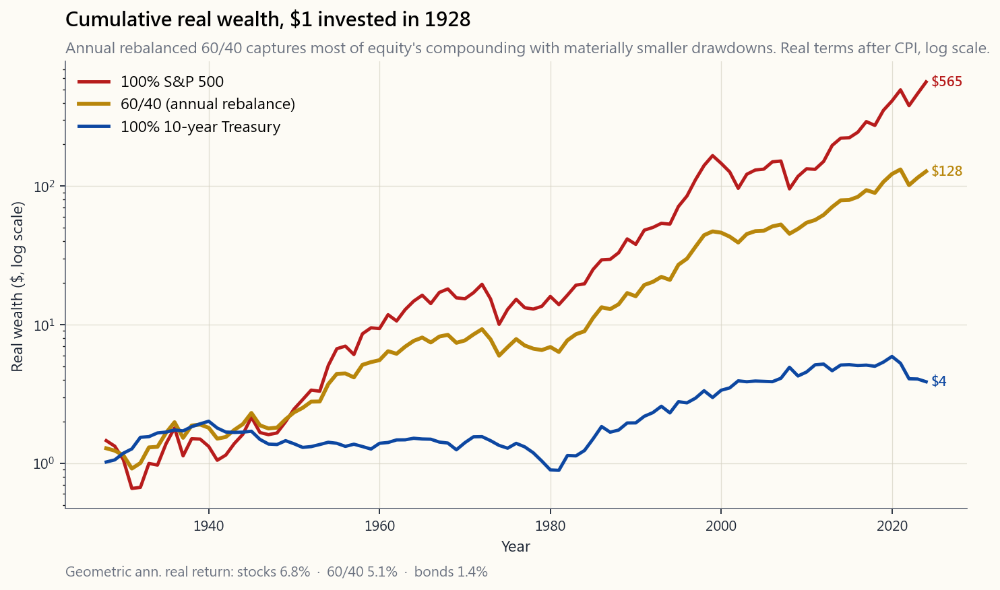
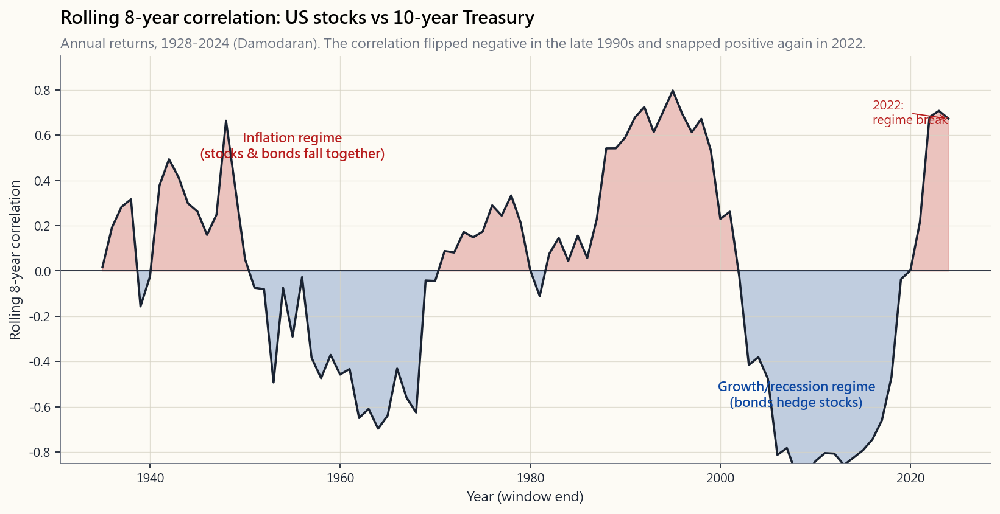

Week 4: The 60/40 Portfolio — Why It Worked and Why 2022 Broke It
1. Why This Is Important
Sixty percent stocks, forty percent bonds. The most famous asset allocation in the history of investing, the default of every financial advisor, the benchmark every balanced fund is measured against, and — until 2022 — the closest thing to a "set it and forget it" portfolio that the textbook profession would put in print.
You need to understand 60/40 for four reasons, even if you end up not running it.
trend, factor tilts, the barbell shape we build in Level 5 (Weeks 47–52) — is measured against 60/40. You cannot evaluate any of those if you don't know what they are improving on.
stocks and bonds are negatively correlated, the 60/40 mix delivers roughly 80% of the equity return with about 60% of the equity risk. That is not arithmetic — that is a *correlation discount* on portfolio volatility, the central insight of Markowitz's Nobel-winning work.
stocks and bonds fell roughly 18% together, the worst year for 60/40 since 1937. Understanding why matters more than the loss itself: the regime that made 60/40 work for forty years had a specific macro signature, and that signature reversed.
in portfolio construction.** Returns shift the level of your wealth. Correlations shift the shape of the distribution. The stock-bond correlation flipped sign in 2022, and the entire industry is still digesting what that means.
This lesson covers the origin and mechanics, the historical performance by decade, the correlation history, the 2022 break, and the modern adaptations.
2. What You Need to Know
2.1 The Mechanics — Why Mix Stocks and Bonds at All?
The single insight: **the volatility of a portfolio is not the weighted average of the volatilities of its parts.**
For two assets with weights $w_1, w_2$, standard deviations $\sigma_1, \sigma_2$, and correlation $\rho$:
$$ \sigma_p = \sqrt{w_1^2 \sigma_1^2 + w_2^2 \sigma_2^2 + 2 w_1 w_2 \sigma_1 \sigma_2 \rho} $$
When $\rho < 1$, that square root is less than the weighted-average volatility. The closer to $\rho = -1$, the more risk reduction. Diversification is correlation arithmetic.
A worked example before the table makes the point concrete. Take US stocks at $\sigma = 16\%$ and US Treasuries at $\sigma = 6\%$, and a 60/40 mix. The naive guess — that 60/40 risk equals 60% of stock risk plus 40% of bond risk — gives $0.6 \times 16\% + 0.4 \times 6\% = 12.0\%$. That is what you would get if the two assets moved in lockstep. With a more realistic correlation of $\rho = -0.3$, the formula gives:
$$ \sigma_p = \sqrt{0.6^2 \cdot 16^2 + 0.4^2 \cdot 6^2 + 2 \cdot 0.6 \cdot 0.4 \cdot 16 \cdot 6 \cdot (-0.3)} \approx \sqrt{88.1} \approx 9.4\% $$
That gap from 12.0% down to 9.4% — about a 22% reduction in portfolio volatility for no give-up in expected return — is the entire point of mixing the two assets. It is not a budget calculation; it is the correlation discount Markowitz won the Nobel for.
For US stocks ($\sigma \approx 16\%$) and US Treasuries ($\sigma \approx 6\%$), with the long-run correlation between them:
| Stock-bond ρ | 60/40 σ | Diversification benefit |
|---|---|---|
| +1.0 (perfectly correlated) | 12.0% | None — pure weighted average |
| 0.0 (uncorrelated) | 10.1% | About 16% volatility reduction |
| −0.3 (typical 1990s–2010s) | 9.4% | About 22% reduction |
| −1.0 (theoretical) | 7.2% | Maximum reduction |
The 1990s–2010s regime delivered an average stock-bond correlation around −0.3. That is the entire reason 60/40 worked so well for so long. It was not about either asset's expected return; it was about the cross-correlation.
2.2 Historical Performance — The Forty-Year Tailwind
The chart below plots the cumulative real wealth (after CPI) of 100% stocks, 100% Treasuries, and 60/40 from 1928 forward, all rebalanced annually.

Read the chart from far right to far left. By 2024, $1 invested in 1928 in real terms became roughly:
- $565 at 100% stocks
- $128 at 60/40
- $4 at 100% bonds
By decade, the picture is more nuanced. The drawdown columns are each asset's within-decade worst peak-to-trough loss in real terms (annual data, so an event that bottoms in the next decade is attributed there).
| Decade | 60/40 (real ann.) | Stocks (real ann.) | Bonds (real ann.) | 60/40 max DD | Stocks max DD | Bonds max DD |
|---|---|---|---|---|---|---|
| 1930s | 1.0% | -0.1% | 4.7% | -23% | -38% | -1% |
| 1940s | 1.6% | 3.6% | -3.5% | -23% | -25% | -32% |
| 1950s | 12.5% | 16.7% | -2.6% | -6% | -13% | -11% |
| 1960s | 3.5% | 5.0% | -0.7% | -12% | -14% | -17% |
| 1970s | -0.7% | -1.4% | -1.0% | -36% | -49% | -33% |
| 1980s | 9.7% | 12.0% | 7.2% | -8% | -13% | -9% |
| 1990s | 8.7% | 14.8% | 4.6% | -5% | -1% | -11% |
| 2000s | 1.8% | -3.4% | 4.4% | -15% | -37% | -13% |
| 2010s | 6.8% | 11.4% | 1.6% | -4% | -6% | -10% |
| 2020-24 | 1.6% | 6.7% | -3.5% | -23% | -23% | -34% |
The 1980s, 1990s, and 2000s are the three decades that built 60/40's reputation. The 1980s–90s contributed the return story: real bond returns above 7% per year in the '80s, real stock returns above 12% in the '90s. The 2000s contributed the protection story: stocks lost 3.4% per year in real terms across the dot-com bust and GFC, and the bond sleeve carried the 60/40 portfolio to a positive real return anyway. That decade is where retail advisors learned to trust the bond hedge, not just price it. Across all three decades the stock-bond correlation ran around −0.3 to −0.4. Whatever-asset-was-falling-the-other-was-rising, and the rebalance trade paid you to mechanically buy the underperformer. The 2020–24 row is what concerns the modern industry — and it is the row the rest of this lesson exists to explain.
Why is rebalancing actually good — and why isn't 60/40 always worse than 100% stocks?
Look at the table honestly. Across the full 97-year window, 100% stocks compounds at 6.8% real and 60/40 at 5.1% — roughly $565 vs $128. **Over a long horizon, with no behaviour problem, 100% stocks wins on terminal wealth.** The course is not going to pretend otherwise. The case for 60/40 is not "higher return"; it is three related effects:
2000s — 60/40 took materially less of the equity loss. -38%, -49%, -37% on stocks compressed to -23%, -36%, -15% on 60/40. That smaller hole is the behavioural alpha: an investor who does not panic-sell at -25% is a different person from one who panic-sells at -49%.
mechanical "sell what just outperformed, buy what just underperformed." Over decades that adds roughly 0.2–0.4% per year on a 60/40 mix (Bouchey, Nemtchinov, Paulsen and others estimate it in this range). It is not a free lunch — it requires both assets to be roughly mean-reverting and negatively correlated, which is exactly what failed in 2022 — but in normal regimes it is real and persistent.
then +50% lands at -25% of starting value. A portfolio that goes -25% then +25% lands at -6%. Cutting the drawdown in half does more than halve the recovery cost. Lower-vol portfolios compound geometric returns closer to their arithmetic returns.
Honest framing for the lesson: **the correct comparison for a buy-and-hold investor with a 30-year horizon is 100% stocks vs 60/40 vs the barbell — not 60/40 vs nothing.** 100% stocks wins on terminal wealth across long enough windows; 60/40 wins on the worst two-year stretch you have to live through; the barbell tries to keep most of the equity upside while replacing the middle-of-the-curve bonds with structurally better diversifiers (cash + gold + tail hedges). We come back to that comparison at the end of this lesson.
Can rule-based / "timed" rebalancing improve on the calendar?
This is a real research literature, not folklore. The headline finding: **rule-based variants modestly improve on calendar rebalancing in backtest, but the improvement is small relative to the variance across implementations and is fragile out of sample.**
- Threshold (band) rebalancing — rebalance only when the
- Trend-overlay rebalancing — only rebalance into an asset when
- Valuation-tilt rebalancing — over-weight equities when CAPE is
Bottom line: a calendar or band-rebalanced 60/40 captures roughly all of the robust premium. Anything more clever crosses the line into active allocation — which can work, but at that point you are no longer running a passive 60/40. We come back to discretionary rebalancing under "Misconceptions" below and again in §2.7.
2.3 The Correlation Story — The Hidden Variable
The chart below is the rolling 36-month correlation between US stocks and US Treasuries from 1928 forward. The single most important fact in the entire lesson lives on this chart.

Three regimes are visible:
- 1928–1997: stocks and bonds usually moved together. Inflation
- 1998–2021: the great inverse window. Inflation faded as the
- 2022 onward: the inverse regime cracked. When the Fed had to
The simple frame: **stocks and bonds are negatively correlated when the dominant macro driver is growth/recession; they are positively correlated when the dominant driver is inflation.** Decide which regime you think the next decade will be, and you have decided whether 60/40 is still your friend.
2.4 Bond Yields Are a Policy Variable, Not a Market Price
Before we get to 2022, one thing every investor running 60/40 needs to understand and almost no certification curriculum says out loud: the bond half of your portfolio is not priced in a free market. The level and shape of the yield curve is set, in large part, by the central bank. Short rates are literally set by the Federal Reserve at the FOMC meeting. Long rates are nominally a market price but are heavily steered by quantitative easing and tightening, by forward guidance about future policy rates, and — in some jurisdictions — by explicit yield-curve control (YCC), where the central bank commits to buying or selling unlimited size to peg the yield at a chosen level.
The cleanest worked example is the Bank of Japan. From 2016 to 2024 the BOJ ran explicit YCC, capping the 10-year Japanese government bond yield first at 0% then at 0.25%, then 0.5%, then 1.0% — every "adjustment" was a mini policy regime change that moved the entire JGB curve overnight. JGB holders for those eight years were not holding a free-market asset; they were holding a policy promise whose payoff depended on the BOJ's willingness to keep printing. When the BOJ exited YCC in 2024, the long end repriced sharply.
The Fed has done softer versions of the same thing. The 2008–2014 QE program suppressed long-Treasury yields by an estimated 100–150 basis points below where a free market would have cleared. The 2020–2021 emergency easing kept the 10-year below 1% for over a year. The 2022 tightening was the unwind of those policy positions, not a market-driven move.
What this means for your 60/40 portfolio is uncomfortable:
- The bond sleeve's expected return is the current yield, and the
- "Tail risks" for the bond sleeve are policy events: yield-curve
- The classic 60/40 requires the Fed put to work. The unstated
This is part of why bond yield level matters so much for whether 60/40 is sensible at any given moment (we revisit this directly in Q1). At a 1% 10-year yield, the bond sleeve has almost no income buffer and enormous duration risk on a rate-up move. At a 4–5% yield the math is genuinely different: even a 100 bp rate shock leaves the bond sleeve roughly flat over a year. The 60/40 portfolio is a different instrument depending on where the central bank has set the yield curve when you start.
2.5 The 2022 Debacle — What Actually Happened
In one calendar year:
| Asset | 2022 total return |
|---|---|
| S&P 500 (incl. dividends) | -18.1% |
| 10-year Treasury (incl. coupons) | -17.8% |
| 60/40 portfolio | ~-18.0% |
| CPI (inflation) | +6.5% |
| 60/40 in real terms (after CPI) | ~-24% |
That last number is the worst real-return year for the 60/40 portfolio since 1937. The mechanism was simple and terrifying. The Fed funds rate started 2022 at 0.25% and ended above 4%. Long bonds repriced because of the rate move. Stocks repriced because the discount rate on future cash flows is the long bond yield, and that doubled. Both fell. Together. With no place to hide for the unhedged investor.
The 2022 drawdown also showed something else: **a 60/40 portfolio provides no protection against an inflation shock.* Cash lost less* than long bonds because cash has near-zero duration and short T-bill rates kept reinvesting at the rapidly rising Fed funds rate; gold roughly held value; commodities rose. The classic two-asset diversifier was the worst allocation in the year of high inflation that everyone had been talking about for a decade.
What broke — a checklist
Five things had to be true for 60/40 to keep working. In 2022, all five flipped at once. Use this as your forward-looking dashboard:
| Pillar | 1990s–2010s setting | 2022 setting |
|---|---|---|
| Inflation regime | Falling / anchored ≤2% | Spike to 9%, sticky |
| Policy rates | Low and falling, Fed put active | Rapid hiking, Fed put withdrawn |
| Stock-bond correlation | ~−0.3 (negative) | Sharply positive |
| Long-bond duration risk | Hidden by 40-year bull market | Realised — 30%+ losses on TLT |
| Real-return capture | Stocks + bonds beating CPI | Both lost real value together |
Read the right column as the warning sign. If those settings persist or recur — if inflation stays sticky and the Fed cannot credibly cut into a recession because CPI is still 4%, if the correlation stays positive — the 1990s–2010s shape of 60/40 will not return. If they reverse — disinflation back to 2%, growth scares pulling rates lower, correlation flips back negative — 60/40's "golden age" framing is appropriate again.
2.6 Modern Adaptations — Where 60/40 Goes Now
A short history note before the adaptations. **60/40 is not a Ray Dalio invention.** The 60/40 mix is the conventional advisor and balanced-fund default that predates risk parity by decades — the "60% stocks, 40% bonds" rule of thumb appears in pension and trust literature back to the 1950s. Dalio's contribution is the **All Weather portfolio* (and its institutional sibling, risk parity*): roughly 30% stocks, 55% long bonds, 15% commodities and gold by capital weight, but balanced so each asset class contributes equal risk. The unifying idea — diversify across macro regimes rather than across asset labels — is genuinely different from 60/40. All Weather was designed precisely so that no single regime (growth shock, inflation shock, deflation shock, recession) could sink the portfolio. We come back to risk parity and All Weather explicitly in Week 15 ("Multi-Asset and Risk Parity") and again in Level 5; for the rest of this lesson we keep the focus on the plain-vanilla 60/40 baseline.
Three modifications, in increasing order of complexity.
inflation, T-bills (short-duration, highest reinvestment of new yield) outperform long bonds in nearly every scenario. A 60/30/10 allocation (stocks/short-Treasuries/cash) gives up almost no long-run return and dramatically reduces 2022-style drawdowns.
zero in normal regimes and turns negative in inflation shocks. The classic Permanent Portfolio (25/25/25/25 stocks / long-bonds / cash / gold) is the historical archetype; modern variants run smaller gold weights with a bigger equity tilt. Gold is not free — it has no yield and high real-rate sensitivity — but in the regime where 60/40 broke, gold worked.
allocation (5–10%) to managed-futures or long-vol structures pays for itself in tail events. This is the institutional adaptation; we cover it in detail in Week 47 and Week 50.
Comparing the major archetypes side-by-side:
| Allocation | Stocks | Bonds (long) | Cash / short Tsy | Gold | Other | Best regime | Worst regime |
|---|---|---|---|---|---|---|---|
| 100% stocks | 100 | — | — | — | — | Long expansions, low CPI | Deep bear / GFC-style crash |
| Classic 60/40 | 60 | 40 | — | — | — | Disinflation + Fed put (1990s–2010s) | Inflation shock (1970s, 2022) |
| 60/30/10 | 60 | 30 | 10 | — | — | Same as 60/40 but cheaper drawdown in rate shocks | Same as 60/40, milder |
| 55/30/10/5 | 55 | 30 | 10 | 5 | — | Adds inflation buffer; closer to all-weather | Sustained negative real rates with no inflation |
| Permanent Portfolio | 25 | 25 | 25 | 25 | — | Any single-regime shock | Long bull market in stocks (gives up upside) |
| Dalio All Weather (~) | 30 | 40 | — | 7.5 | 22.5 commodities/TIPS | Diversified across all four macro regimes | Persistent stagflation with rising real rates |
| Barbell (Level 5 preview) | 50–70 (concentrated + asymmetric) | 0 | 20–35 | 5–10 | 5–10 tail hedges | Volatile regimes with both up- and down-tails | Long quiet grind upward (overpays for hedges) |
The honest framing is the one Horace pushes throughout the course: **60/40 worked because of a specific macro regime that is unlikely to repeat with the same intensity over the next decade**. It is not broken. It is no longer optimal. The barbell shape — concentrated safety on one end, asymmetric speculation on the other, very little in the structurally-mediocre middle — is the more honest answer for investors who can stomach a different shape of returns.
Important caveat. The barbell is an advanced migration path, not a Week 4 implementation instruction. It requires the option, hedging, sizing, and tax tools we develop across Levels 2–4 (especially Weeks 25–30, 41–42, 47, and 50). Do not try to build a barbell after this lesson. Build the 60/40 (or 60/30/10) baseline first, run it through one full crisis cycle, and only then consider the barbell migration described in Week 52. The right Week 4 takeaway is "I now understand the baseline that every later allocation will compare to."
2.7 Rebalancing Strategies for 60/40
Three families of rebalancing rule, ordered by how much work they take and roughly how much they capture of the rebalancing premium.
| Rule | What it does | Trades / year | Premium captured | Tax cost (taxable account) |
|---|---|---|---|---|
| Buy & hold (no rebalance) | Let weights drift forever | 0 | None — equity allocation grows toward 100% | Zero |
| Calendar — annual | Reset to 60/40 every January | 1 | Most of it (~0.2–0.4% / yr) | Moderate |
| Calendar — quarterly / monthly | Reset on schedule | 4–12 | Marginal additional gain; transaction & tax costs eat it | High |
| Threshold / band — 5% absolute | Rebalance only when stock weight drifts ≥5% from target | ~0.3 in calm markets, several in crises | Comparable to annual, with fewer trades | Lower than annual |
| Threshold / band — relative (e.g., ±25% of target) | Wider bands; even fewer trades | ~0.1–0.5 | Slight underperformance vs annual | Lowest |
| Trend / momentum overlay | Only rebalance into an asset when it is above its trend (e.g., 200-day or 10-month MA) | Variable | Helps in trending bears (2008); hurts in V-recoveries (2020) | Variable |
| Valuation tilt | Over-weight the cheaper asset (CAPE, real-yield rules) | 1–4 | ~0.3–0.6% / yr in long backtests; severe data-mining risk | Moderate–high |
Two practical recommendations:
absolute band, checked quarterly, is the right answer.** It captures essentially all of the calendar-rebalance premium with fewer trades, lower taxes, and one psychological benefit: you only act when something has actually moved enough to matter.
ever selling.** Selling-to-rebalance is the last resort — contribution-rebalancing has zero tax cost and zero spread cost. Many investors going through their accumulation years never need to sell-rebalance at all if they are still adding new money.
The deeper trade-off — when "rule-based" rebalancing crosses the line into discretionary active management — is covered under Misconception 5 below.
3. Common Misconceptions
Misconception 1: "Bonds are the safe part of 60/40."
Bonds are less volatile than stocks. They are not safe. In 2022, US Treasuries lost more than they had in any year of the prior seven decades. Long bonds lost roughly 30%, which is a larger loss than the median equity bear market. The "bond sleeve = safety" framing is a 1980–2020 artefact of a 40-year bull market in bonds caused by falling rates.
Misconception 2: "60/40 has always worked."
In real terms, 60/40 lost money over the entire 1965–1981 stretch. For 16 years a balanced investor saw real wealth shrink because inflation outran the combined nominal returns of stocks and bonds. It was not until the 1980s that the long-run real trend returned.
**Misconception 3: "Adding bonds to a stock portfolio always reduces return."**
Not necessarily. When you rebalance annually, the rebalancing trade — selling whichever asset just outperformed and buying the underperformer — is a small but persistent source of additional return on top of the buy-and-hold blend, because it is a mechanical "buy low, sell high." Some 60/40 backtests over long horizons show higher compound returns than 100% stocks because of this rebalancing premium plus the smaller drawdowns. The free-lunch component is small, but real.
Misconception 4: "International diversification fixes the problem."
International stocks have a high correlation to US stocks in the events that actually matter (recessions, financial crises, the COVID crash). They reduce some country-specific risk but do little to solve the stock-bond correlation problem in 60/40. Asset-class diversification, not geographic diversification, is what shifts the portfolio's response to inflation shocks.
Misconception 5: "60/40 is actively managed if you rebalance."
Calendar or band rebalancing back to a fixed allocation is not active management — it is a mechanical rule with no view on the future. Strict 60/40 with annual or 5%-band rebalancing is fully passive at the strategy level. The key word is fixed.
Where the line moves is when the target itself changes based on a view: reducing the bond weight when yields are low, raising stocks when CAPE is cheap, switching to cash when the 200-day moving average breaks. Those are active decisions. They may each be coded as a mechanical rule, but the choice of rule is a discretionary view on the future of returns and correlations. Once you do that, you are no longer running passive 60/40 — you are running a tactical allocation overlay, and you should evaluate it as one (alpha, edge, out-of-sample robustness, drawdown vs benchmark). The honest test is: would a different family of rules — selected today, with the same logic — give a different allocation? If yes, it is active.
**Misconception 6: "I should rebalance frequently to capture the rebalance bonus."**
The rebalancing premium is real but small (~0.2–0.4% per year on typical 60/40 backtests). Quarterly or annual rebalancing captures most of it; weekly or daily rebalancing has three problems that together usually destroy the premium:
over horizons of weeks-to-months before mean-reverting. Rebalancing weekly forces you to sell whatever just rallied while it is still rallying — selling a winner that is about to keep winning is the worst version of "buy low, sell high."
the spread plus, in some accounts, commissions. On a 60/40 portfolio with weekly rebalancing the round-trip cost can match the entire rebalance premium.
is a realisation event. Short-term gains are taxed as ordinary income (often >35% federal + state). A weekly rebalancer in a taxable account can give all of the rebalance premium back to the IRS — and then some. This is exactly why §2.7 recommends contribution-rebalancing first and threshold-band rebalancing second; both minimise realisations.
Annual is the conventional answer; semi-annual or 5%-band quarterly is fine. More frequent than that is over-engineering that pays momentum, spread, and the tax man for the privilege of looking busy.
4. Q&A
Q1: Should I run 60/40 in 2026?
A: Honestly, "it depends on the bond yield." 60/40 is most defensible at higher nominal bond yields and least defensible at low ones, because the entire bond sleeve is asymmetric to the starting yield. At a 1% 10-year yield (the 2020–2021 setup), the bond half delivers 1% of carry and takes a -10% hit on every 100 bp of rate-up move — that is a structurally bad trade. At a 4–5% 10-year yield (closer to where the curve has reset post-2022), the bond half delivers a meaningful coupon, the duration risk is partially compensated, and the math of 60/40 is genuinely much better. As of writing, US 10-year yields in the 4-handle make 60/40 more defensible than it was in 2020 — but still inferior to the cash-tilted variants.
The deeper issue is the Fed-put assumption. The classic 60/40 implicitly assumes that when stocks crash, the Fed will cut rates aggressively, bonds will rally, and the bond sleeve will carry the portfolio. That assumption holds whenever inflation is anchored near 2% (1990s–2010s). It breaks whenever inflation is sticky and the Fed cannot credibly cut without re-igniting CPI (1970s, 2022). Before committing to 60/40, ask yourself: *do I believe the next crisis will be deflationary (Fed cuts, bonds save me) or inflationary (Fed cannot cut, bonds fall with stocks)?*
For a long-horizon investor with no edge and no time to manage a portfolio actively, 60/40 is still a defensible answer — but the better defensible answer in the current regime is 60/30/10 (stocks / short-duration Treasuries / cash) or 55/30/10/5 (adding gold). Pure long-bond 40% is the part most exposed to a reversal of the 2022-style positive correlation regime, and it is also the part most exposed to a Fed that is no longer free to cut.
Q2: Why not 70/30 or 50/50? What's special about 60/40?
A: Nothing is special — it's a convention, not a derivation. The Sharpe ratio is fairly flat from about 40/60 to 70/30. The "right" allocation is the one you can hold through a 35% drawdown without selling. 70/30 is for higher-tolerance / longer-horizon investors; 50/50 is for shorter-horizon / lower-tolerance ones. 60/40 sits in the middle and got institutionalised because of that.
Q3: How do I implement 60/40 with ETFs in practice?
A: Two ETFs is enough. VTI (or VOO/SPY for S&P 500) for the equity sleeve; AGG or BND for the bond sleeve. Set monthly automatic contributions in 60/40 proportions. Once a year, rebalance back to 60/40. Total annual time commitment: about thirty minutes. Total expense ratio: roughly 0.04%.
Q4: What about "all-in-one" balanced funds?
A: Vanguard's VBAIX (60/40), iShares' AOR (60/40), and similar products do the rebalancing internally. Slightly higher expense ratio (0.07–0.30% vs 0.04% for the two-ETF version), no rebalancing chore for you. Reasonable for accounts you don't want to touch. For taxable accounts the two-ETF version is better because you can control the tax timing on rebalances.
Q5: Why did 2008 not break 60/40 the way 2022 did?
A: In 2008, stocks fell ~37% and long Treasuries rallied roughly +20%. The 60/40 drawdown was about −22% — bad, but materially less than the equity drawdown. The bond rally had two compounding causes: (1) **the Fed cut the funds rate from 5.25% in mid-2007 to essentially 0% by December 2008** — a roughly 500 bp easing cycle that mechanically lifted long-bond prices through duration; and (2) a flight-to-safety bid, where investors fleeing equities and credit parked cash in Treasuries, adding to the price move on top of the policy-rate cut. The Fed-cut leg is by far the bigger driver of the 20% bond rally — pure flight-to-safety in a quiet rate environment usually delivers a few percent at most. In 2022 the Fed was raising rates instead of cutting, so neither force was available: there was no monetary tailwind for bonds and no durable safe-haven bid (bonds were the asset people were fleeing from). Mechanism difference: 2008 was a deflationary credit shock with the Fed put fully active; 2022 was an inflationary monetary shock with the Fed put withdrawn. The 60/40 portfolio is hedged against the former and exposed to the latter.
Q6: Should I rebalance with new contributions or by selling?
A: With new contributions if you can. Direct your monthly inflow to whichever sleeve is below target — that rebalances without realising taxable gains and without paying spread. Sell-to-rebalance only when contributions are no longer enough to fix the drift, or once a year as a clean-up.
Q7: What about international bonds?
A: For US-domiciled investors, hedged international developed-market bonds (BNDX) provide marginal additional diversification. In practice the diversification benefit is small (the world's investment-grade sovereign debt is heavily correlated through the global rate cycle), and the FX hedge eats some of the yield. Most practitioners skip them and just hold US Treasuries.
**Q8: Where does a "barbell" allocation fit relative to 60/40?**
A: The barbell rejects 60/40 at the philosophical level. The middle of the risk spectrum (investment-grade bonds, dividend-stock defensive allocations) is exactly the part the barbell strips out because it is the part that gets crushed in inflation shocks. The barbell holds more concentrated safety than 60/40 (cash, short T-bills, gold) and more asymmetric speculation than 60/40 (long calls, momentum equity, Bitcoin or specific asymmetric trades sized as speculation — not a generic "crypto" allocation), with very little in between.
Q9: Is the rebalancing premium taxable?
A: In a taxable account, every rebalance trade is a potential realisation. To preserve the premium net of taxes, rebalance with contributions where possible (no realisation), and use tax-advantaged accounts (IRA, 401k, 529) for the sleeve that accumulates fastest-growing gains. The two-ETF 60/40 is genuinely cheap on expense; on taxes, your account structure matters more than the ETF choice.
Q10: How does this connect to the rest of the course?
A: 60/40 is the baseline. Week 5 goes deep on the bond half (coupons, prices, yields, duration) — the mechanics behind why the bond sleeve behaved the way it did in 2008 and 2022. Week 6 covers gold and commodities, which are the natural inflation-shock complements to 60/40. Week 11 merges rebalancing into the behavioural-discipline lesson and covers the mechanics in detail. Week 15 introduces multi-asset and risk parity — the Dalio "All Weather" alternative to 60/40. Week 23 covers factor investing, which slices the equity sleeve into return premia. Week 47 covers the long-volatility / tail-hedge sleeve that you can graft onto 60/40 to address the inflation-shock vulnerability. Level 5 (Weeks 47–52) is where the barbell portfolio shape is actually built. Every subsequent allocation discussion will compare to the 60/40 baseline you have just learned.
Interactive panel
The interactive panel below is a generalisation of the cumulative wealth chart in §2.2: it starts from the same Damodaran 1928–2024 dataset and the same 60/40 line, but lets you sweep the stock weight in 10% steps from 0% to 100% (so the static 60/40 line in the §2.2 chart is what you see when the slider sits at 60%), toggle between annual rebalancing and pure buy-and-hold, and switch between real (CPI-adjusted) and nominal terms. Underneath the wealth curve it draws the rolling drawdown from each running peak, and reports the geometric annual return, annualised volatility, worst drawdown, and Sharpe ratio (using the 3-month T-bill as the risk-free rate). Slide it. Watch where the Sharpe-ratio peak sits, and watch how the 1973–74 and 2008 drawdowns change shape as you move the stock weight.
第4週：六四投資組合——為何曾經奏效，以及為何2022年令其崩潰
1. 為何此課題重要
六成股票，四成債券。這是投資史上最著名的資產配置，是每位理財顧問的預設方案，是每隻均衡基金的衡量基準，也是——直至2022年——最接近「設定後放手不管」的投資組合，是教科書界願意白紙黑字推介的方案。
即使你最終不採用六四組合，你仍需要了解它，原因有四。
本課涵蓋六四組合的起源與機制、按年代劃分的歷史表現、相關性歷史、2022年的崩潰，以及現代的調適方案。
2. 你需要掌握的知識
2.1 機制——為何要混合股票與債券？
核心洞見：投資組合的波動性並不等於其組成部分波動性的加權平均。
對於兩種資產，權重為 $w_1, w_2$，標準差為 $\sigma_1, \sigma_2$，相關性為 $\rho$：
$$ \sigma_p = \sqrt{w_1^2 \sigma_1^2 + w_2^2 \sigma_2^2 + 2 w_1 w_2 \sigma_1 \sigma_2 \rho} $$
當 $\rho < 1$ 時，這個平方根小於加權平均波動性。越接近 $\rho = -1$，風險降低越多。分散投資就是相關性的算術。
一個具體例子可令這一點更清晰。設美國股票 $\sigma = 16\%$，美國國債 $\sigma = 6\%$，採用六四組合。若直覺猜測六四組合的風險等於60%的股票風險加40%的債券風險，則得 $0.6 \times 16\% + 0.4 \times 6\% = 12.0\%$。這是兩種資產完全同步波動時的結果。採用更切合實際的相關性 $\rho = -0.3$，公式給出：
$$ \sigma_p = \sqrt{0.6^2 \cdot 16^2 + 0.4^2 \cdot 6^2 + 2 \cdot 0.6 \cdot 0.4 \cdot 16 \cdot 6 \cdot (-0.3)} \approx \sqrt{88.1} \approx 9.4\% $$
從12.0%降至9.4%——在不犧牲預期回報的前提下，投資組合波動性降低約22%——這正是混合兩種資產的全部意義所在。這不是預算計算，而是馬科維茨獲得諾貝爾獎的相關性折扣。
以美國股票（$\sigma \approx 16\%$）和美國國債（$\sigma \approx 6\%$）為例，以及兩者之間的長期相關性：
| 股債相關性 ρ | 六四組合 σ | 分散投資效益 |
|---|---|---|
| +1.0（完全正相關） | 12.0% | 無——純加權平均 |
| 0.0（不相關） | 10.1% | 波動性降低約16% |
| −0.3（1990年代至2010年代典型值） | 9.4% | 降低約22% |
| −1.0（理論極值） | 7.2% | 最大幅度降低 |
1990年代至2010年代的環境帶來了平均約−0.3的股債相關性。這正是六四組合長期表現優異的全部原因。這並非關乎任何一種資產的預期回報，而是關乎交叉相關性。
2.2 歷史表現——長達四十年的順風
以下圖表顯示自1928年起，100%股票、100%國債及六四組合的累計實際財富（扣除消費物價指數後），均以每年再平衡。
從右至左閱讀圖表。至2024年，1928年投入的1美元在實際值方面大約變為：
- 100%股票：565美元
- 六四組合：128美元
- 100%債券：4美元
按年代分析，圖像更為細緻。回撤欄顯示的是每種資產在該年代內最大由峰至谷的實際虧損（年度數據，因此在下一年代才觸底的事件歸入下一年代）。
| 年代 | 六四組合（實際年化） | 股票（實際年化） | 債券（實際年化） | 六四最大回撤 | 股票最大回撤 | 債券最大回撤 |
|---|---|---|---|---|---|---|
| 1930年代 | 1.0% | -0.1% | 4.7% | -23% | -38% | -1% |
| 1940年代 | 1.6% | 3.6% | -3.5% | -23% | -25% | -32% |
| 1950年代 | 12.5% | 16.7% | -2.6% | -6% | -13% | -11% |
| 1960年代 | 3.5% | 5.0% | -0.7% | -12% | -14% | -17% |
| 1970年代 | -0.7% | -1.4% | -1.0% | -36% | -49% | -33% |
| 1980年代 | 9.7% | 12.0% | 7.2% | -8% | -13% | -9% |
| 1990年代 | 8.7% | 14.8% | 4.6% | -5% | -1% | -11% |
| 2000年代 | 1.8% | -3.4% | 4.4% | -15% | -37% | -13% |
| 2010年代 | 6.8% | 11.4% | 1.6% | -4% | -6% | -10% |
| 2020至24年 | 1.6% | 6.7% | -3.5% | -23% | -23% | -34% |
1980年代、1990年代以及2000年代，是奠定六四組合聲譽的三個十年。1980至90年代貢獻了回報的故事：80年代債券實際回報超過每年7%，90年代股票實際回報超過12%。2000年代則貢獻了防守的故事：在科網泡沫破裂及全球金融危機期間，股票實際年回報虧損3.4%，而債券部分卻令六四組合維持了正實際回報。正是在那個年代，零售理財顧問學會了信任債券對沖，而不僅僅是為其定價。在這三個年代，股債相關性均維持在約−0.3至−0.4。無論哪種資產下跌，另一種都在上升，而再平衡交易回報你機械式地買入表現較差的資產。2020至24年這一行，才是現代業界所關注的——也是本課餘下部分存在的原因。
為何規則性再平衡實際上是有益的——以及為何六四組合並不總是劣於100%股票？
誠實地審視表格。在長達97年的完整窗口中，100%股票的實際複利為6.8%，六四組合為5.1%——大約565美元對128美元。在足夠長的時間跨度內，在沒有行為問題的情況下，100%股票在最終財富上勝出。 本課程不會對此粉飾。六四組合的理由並非「更高回報」，而是三個相關效應：
本課的誠實框架：對於持有期30年的買入持有投資者，正確的比較是100%股票對比六四組合對比槓鈴——而非六四組合對比什麼都不做。 100%股票在足夠長的時間窗口內最終財富勝出；六四組合在你需要承受的最差兩年期間勝出；槓鈴則試圖保留大部分股票上行空間，同時以結構性更優的分散工具（現金+黃金+尾部對沖）取代曲線中段的債券。我們在本課末尾再回到這一比較。
規則性/「擇時」再平衡能否改善日曆式再平衡？
這是一個真實的學術研究領域，並非民間傳說。核心發現：基於規則的變體在回測中略微優於日曆式再平衡，但這種改善相對於不同實施方式之間的差異而言較小，且樣本外表現脆弱。
- 門檻（區間）再平衡——僅當配置偏離超過5%的絕對值時才再平衡（例如從60%股票偏至65%）——以更少交易和更低稅務摩擦捕捉大部分再平衡溢價。Vanguard的工作論文發現，在長期美國六四回測中，這比每年日曆式再平衡略勝一籌，約每年0.05至0.15%。
- 趨勢疊加再平衡——僅在資產高於其200日或10個月移動平均線時才再平衡買入——在某些時段（尤其是2008年）改善了回撤，在其他時段則使其惡化（尤其是2020年V形復甦，彼時你在三月賣出股票，在八月以更高價格買回）。在長期時間跨度上，淨效果接近持平。
- 估值傾斜再平衡——當週期調整市盈率（CAPE）便宜時超配股票，昂貴時低配。長期回測顯示在美國數據上每年改善約0.3至0.6%，但伴隨著非常長的拖滯期（該策略在2010至2020年大部分時間對美國股票的判斷是錯誤的），且有嚴重的數據挖掘疑慮：只有一段美國歷史，規則是在其上調整出來的，未來30年並非過去30年。
2.3 相關性的故事——隱藏的變數
以下圖表顯示自1928年起，美國股票與美國國債之間的滾動36個月相關性。本課最重要的單一事實就存在於這張圖表中。
三個環境清晰可見：
- 1928至1997年：股票與債券通常同向波動。 通脹是主要驅動因素。通脹上升意味著債券價格下跌（利率上升）以及股票價格下跌（實際盈利受壓）。通脹下降則兩者均上升。相關性為正，分散投資效果欠佳。
- 1998至2021年：大型逆相關窗口。 通脹淡出作為主要驅動因素，增長/經濟衰退成為主導。在經濟衰退中，美聯儲減息→債券上漲。在經濟衰退中，盈利大幅下滑→股票下跌。相關性深度負值。六四組合迎來了有史以來最佳的四十年。
- 2022年起：逆相關環境破裂。 當美聯儲需要大幅收緊以應對9%的消費物價指數時，債券下跌，同時盈利倍數收縮，同時股票下跌。相關性再次翻轉為正值。六四組合迎來自大蕭條時代以來最差的一年。
2.4 債券收益率是政策變數，而非市場價格
在進入2022年之前，每個運作六四組合的投資者都需要了解、但幾乎沒有任何考牌課程明言的一點：你投資組合中的債券部分並非以自由市場定價。 收益率曲線的水平和形態在很大程度上由中央銀行設定。短期利率字面上由美聯儲在聯邦公開市場委員會會議上設定。長期利率名義上是市場價格，但受到量化寬鬆和緊縮、未來政策利率前瞻指引的大力引導，在某些地區甚至受到明確的收益率曲線控制（YCC）——中央銀行承諾以無限規模買入或賣出，將收益率釘在選定水平。
最清晰的例子是日本銀行。從2016年至2024年，日本銀行實施明確的收益率曲線控制，將10年期日本政府債券收益率上限先設在0%，再到0.25%、0.5%、1.0%——每一次「調整」都是一次迷你政策環境轉變，在一夜之間移動了整條日本政府債券曲線。在那八年間持有日本政府債券的投資者，持有的並非自由市場資產，而是一份政策承諾，其回報取決於日本銀行維持印鈔的意願。當日本銀行於2024年退出收益率曲線控制時，長端收益率急劇重新定價。
美聯儲也做過更溫和的版本。2008至2014年的量化寬鬆計劃將長期國債收益率壓低了估計100至150個基點，低於自由市場出清水平。2020至2021年的緊急寬鬆將10年期收益率維持在1%以下超過一年。2022年的緊縮是對那些政策倉位的解除，而非市場驅動的走勢。
這對你的六四投資組合意味著令人不安的現實：
- 債券部分的預期回報是當前收益率，而當前收益率部分是一個政策變數。當你以1%收益率買入10年期國債時，你接受的是美聯儲明確選擇的回報路徑。當美聯儲改變主意——因為通脹衝擊、財政主導轉向，或具有不同反應函數的新主席——債券部分的價格就會移動，有時相當劇烈。
- 債券部分的「尾部風險」是政策事件：收益率曲線控制、金融壓制、明確更高的通脹目標、債務貨幣化環境、外國國債持有限制。這些在馬科維茨意義上都不是可交易的風險；它們是政治事件。
- 傳統六四組合需要美聯儲保障才能奏效。過去四十年的潛在假設是：當股票崩潰時，美聯儲大幅減息，債券上漲，債券部分托起投資組合。一旦消除美聯儲削減的意願或能力——因為通脹過高（1970年代、2022年）或因為利率已在零（2020年是這一限制最後一次咬緊）——債券部分便無以為繼。
2.5 2022年的災難——究竟發生了什麼
在一個日曆年內：
| 資產 | 2022年總回報 |
|---|---|
| 標普500指數（含股息） | -18.1% |
| 10年期國債（含票息） | -17.8% |
| 六四投資組合 | 約-18.0% |
| 消費物價指數（通脹） | +6.5% |
| 六四組合實際回報（扣除消費物價指數） | 約-24% |
最後那個數字，是六四投資組合自1937年以來最差的實際回報年份。機制簡單而可怕。聯邦基金利率由2022年初的0.25%升至年底的4%以上。長債因利率走勢重新定價。股票重新定價，因為未來現金流的折現率就是長債收益率，而後者翻了一倍。兩者一同下跌。對於未對沖的投資者來說，無處可躲。
2022年的回撤還揭示了另一件事：六四投資組合對通脹衝擊毫無保護。 現金虧損少於長債，因為現金的存續期接近零，且短期國庫券利率隨著快速上升的聯邦基金利率不斷再投資；黃金大致保值；商品上漲。在那個大家談論了十年的高通脹年份，傳統的雙資產分散工具是最差的配置。
崩潰了什麼——一份清單
六四組合繼續奏效需要五件事為真。2022年，五件事同時翻轉。以此作為你的前瞻性儀表板：
| 支柱 | 1990年代至2010年代的設定 | 2022年的設定 |
|---|---|---|
| 通脹環境 | 下降/錨定在2%以下 | 飆升至9%，具黏性 |
| 政策利率 | 低且下行，美聯儲保障有效 | 快速加息，美聯儲保障撤回 |
| 股債相關性 | 約−0.3（負值） | 急劇轉正 |
| 長債存續期風險 | 被40年牛市掩蓋 | 已兌現——TLT虧損30%以上 |
| 實際回報獲取 | 股票+債券均跑贏消費物價指數 | 兩者同時虧損實際價值 |
將右欄視為警示信號。若這些設定持續或再現——若通脹保持黏性且美聯儲因消費物價指數仍在4%而無法可信地在衰退中減息，若相關性保持正值——1990年代至2010年代形態的六四組合將不會重現。若它們逆轉——通縮回到2%，增長恐慌拉低利率，相關性翻回負值——六四組合的「黃金時代」框架再度適用。
2.6 現代調適——六四組合的去向
在介紹調適方案之前，先說一點歷史。六四組合並非瑞·達里奧的發明。 六四混合是傳統顧問和均衡基金的預設方案，早於風險平價數十年——「60%股票，40%債券」的經驗法則早在1950年代便出現在養老金和信託文獻中。達里奧的貢獻是全天候投資組合（及其機構版本，即風險平價）：按資本權重約30%股票、55%長債、15%商品及黃金，但平衡設計使每個資產類別貢獻相等的風險。這一統一理念——跨宏觀環境分散，而非跨資產標籤分散——與六四組合確實不同。全天候組合的設計初衷正是使任何單一環境（增長衝擊、通脹衝擊、通縮衝擊、經濟衰退）都無法拖垮投資組合。我們在第15週（「多資產與風險平價」）及第五階段明確回顧風險平價和全天候組合；本課其餘部分保持對普通六四基準的聚焦。
三種調適方案，按複雜度遞增排列。
並列比較主要原型：
| 配置 | 股票 | 債券（長期） | 現金/短期國債 | 黃金 | 其他 | 最佳環境 | 最差環境 |
|---|---|---|---|---|---|---|---|
| 100%股票 | 100 | — | — | — | — | 長期擴張、低通脹 | 深度熊市/全球金融危機式崩潰 |
| 傳統六四組合 | 60 | 40 | — | — | — | 通縮+美聯儲保障（1990至2010年代） | 通脹衝擊（1970年代、2022年） |
| 六三一組合 | 60 | 30 | 10 | — | — | 與六四相同但利率衝擊時回撤較小 | 與六四相同，程度較輕 |
| 五五三一零五組合 | 55 | 30 | 10 | 5 | — | 增加通脹緩衝；更接近全天候 | 持續負實際利率但無通脹 |
| 永久投資組合 | 25 | 25 | 25 | 25 | — | 任何單一環境衝擊 | 股票長牛市（放棄上行空間） |
| 達里奧全天候（約） | 30 | 40 | — | 7.5 | 22.5商品/通脹保值債券 | 跨四種宏觀環境分散 | 持續滯脹伴隨實際利率上升 |
| 槓鈴（第五階段預覽） | 50至70（集中+不對稱） | 0 | 20至35 | 5至10 | 5至10尾部對沖 | 具上下雙尾的波動環境 | 長期平靜的緩慢上漲（對沖成本過高） |
誠實的框架，正如陳馬在整個課程中所強調的：六四組合之所以奏效，是因為特定的宏觀環境，而這種環境在未來十年不太可能以同樣的強度重現。 它並未失效，只是不再最優。槓鈴形態——一端是集中的安全倉位，另一端是不對稱的投機倉位，中間幾乎沒有結構性平庸的資產——對於能夠承受不同回報形態的投資者而言，是更誠實的答案。
重要告誡。 槓鈴是一條進階的遷移路徑，而非第4週的實施指引。它需要我們在第二至四階段（尤其是第25至30週、第41至42週、第47週和第50週）發展的期權、對沖、倉位管理及稅務工具。在本課後不要嘗試構建槓鈴。先建立六四（或六三一）基準，讓它經歷一個完整的危機周期，然後才考慮第52週描述的槓鈴遷移。第4週正確的收穫是：「我現在理解了每一種後續配置都將與之比較的基準。」
2.7 60/40的再平衡策略
三類再平衡規則，按所需工作量排列，並大致反映各自能捕捉的再平衡溢價程度。
| 規則 | 做法 | 每年交易次數 | 溢價捕捉 | 稅務成本（應課稅帳戶） |
|---|---|---|---|---|
| 買入持有（不再平衡） | 讓權重永久漂移 | 0 | 無——股票配置逐漸向100%靠攏 | 零 |
| 定期——每年一次 | 每年一月重設至60/40 | 1 | 大部分（約每年0.2–0.4%） | 中等 |
| 定期——每季／每月 | 按時間表重設 | 4–12 | 邊際額外收益；交易及稅務成本蠶食 | 高 |
| 閾值／區間——5%絕對值 | 僅當股票權重偏離目標≥5%時才再平衡 | 平靜市況約0.3次，危機時數次 | 與每年相當，但交易次數更少 | 低於每年 |
| 閾值／區間——相對值（如目標的±25%） | 區間較寬；交易次數更少 | 約0.1–0.5 | 略遜於每年 | 最低 |
| 趨勢跟蹤／動量疊加 | 僅當資產處於趨勢之上時才再平衡（如200日或10個月移動平均線） | 不定 | 在趨勢性熊市有幫助（2008年）；在V形復甦時有損（2020年） | 不定 |
| 估值傾斜 | 超配較便宜的資產（CAPE、實際收益率規則） | 1–4 | 長期回測中約每年0.3–0.6%；數據挖掘風險嚴重 | 中等至高 |
兩項實際建議：
更深層的取捨——「規則式」再平衡何時跨越成為主動管理——將在下方的誤解五中討論。
3. 常見誤解
誤解一：「債券是60/40中的安全部分。」
債券的波動性低於股票，但並非安全。2022年，美國國債的虧損幅度超過過去七十年任何一年。長期債券損失約30%，比股票熊市的中位跌幅還要大。「債券部分＝安全」的框架，是1980年至2020年間因利率持續下跌而造就的40年債券牛市的產物。
誤解二：「60/40一直有效。」
以實際價值計算，60/40在整個1965年至1981年間錄得虧損。在長達16年的時間裡，均衡投資者的實際財富不斷縮水，因為通脹超越了股票和債券的合計名義回報。直到1980年代，長期實際趨勢才得以恢復。
誤解三：「在股票投資組合中加入債券必然降低回報。」
不一定。每年再平衡時，再平衡交易——賣出剛剛跑贏的資產、買入跑輸的資產——是一個小但持續的額外回報來源，疊加在買入持有組合之上，因為這是機械式的「低買高賣」。部分60/40在長期回測中顯示，複利回報高於100%股票，原因正是這種再平衡溢價加上較淺的回撤。免費午餐的成分雖小，但真實存在。
誤解四：「國際分散投資能解決問題。」
在真正重要的事件中（經濟衰退、金融危機、新冠疫情崩盤），國際股票與美國股票的相關性相當高。它們能降低部分特定國家風險，但無助於解決60/40中的股債相關性問題。能夠改變投資組合對通脹衝擊反應的，是資產類別分散投資，而非地域分散投資。
誤解五：「再平衡就等於主動管理。」
將配置重設至固定比例的定期或區間再平衡，並非主動管理——它是一個對未來毫無預判的機械規則。嚴格遵守每年或5%區間再平衡的60/40，在策略層面完全屬於被動管理。關鍵詞是固定。
界線在於，當目標本身因某種觀點而改變時：在收益率低時降低債券比重、在CAPE便宜時增持股票、在200日移動平均線跌穿時切換至現金。這些都是主動決策。 它們各自可能被編碼為機械規則，但選擇規則本身是對未來回報和相關性的主觀判斷。一旦如此操作，你就不再運行被動60/40，而是在執行戰術配置疊加策略，應當以此評估（阿爾法、優勢、樣本外穩健性、相對基準的回撤）。誠實的測試是：若今天以相同邏輯選擇另一套規則，是否會得出不同的配置？若是，則屬主動管理。
誤解六：「應該頻繁再平衡以捕捉再平衡紅利。」
再平衡溢價真實存在，但幅度很小（在典型60/40回測中約每年0.2–0.4%）。每季或每年再平衡能捕捉大部分；而每週或每日再平衡則存在三個問題，合計通常會消耗殆盡該溢價：
每年一次是慣常答案；每半年一次或5%區間加每季檢查亦可。頻率更高則屬過度工程，費力向動量、差價和稅務局支付，只為看起來忙碌。
4. 問答
問題一：2026年我應該運行60/40嗎？
答：坦白說，「視乎債券收益率而定。」在較高名義債券收益率下，60/40最具說服力；在低收益率下最不具說服力，因為整個債券部分對起始收益率呈不對稱反應。在1%的10年期收益率（2020–2021年的環境）下，債券部分提供1%的票息，且每上升100個基點便承受約-10%的損失——從結構上而言是一筆糟糕的交易。在4–5%的10年期收益率（更接近2022年後曲線重置的位置）下，債券部分提供有意義的票息，存續期風險獲得部分補償，60/40的數學邏輯確實好得多。截至撰文時，美國10年期收益率在4字頭，使60/40比2020年時更具說服力——但仍遜於偏現金的變體。
更深層的問題是美聯儲看跌期權假設。經典60/40隱含假設：每當股票崩盤，美聯儲將大幅降息，債券將上漲，債券部分將支撐投資組合。這一假設在通脹錨定於2%附近時成立（1990年代至2010年代）。每當通脹黏性過強、美聯儲無法在不重燃消費物價指數的情況下可信地降息時，它便失效（1970年代、2022年）。在承諾60/40之前，問問自己：我是否相信下一次危機將是通縮性的（美聯儲降息，債券救我），還是通脹性的（美聯儲無法降息，債券與股票同跌）？
對於沒有優勢、也沒有時間主動管理投資組合的長期投資者，60/40仍是一個可以辯護的答案——但在當前環境下，更可辯護的答案是60/30/10（股票/短存續期國債/現金），或55/30/10/5（加入黃金）。純長債40%是最容易受到2022年式正相關環境逆轉衝擊的部分，也是最容易受到美聯儲不再自由降息影響的部分。
問題二：為什麼不是70/30或50/50？60/40有何特別之處？
答：沒有特別之處——這是慣例，而非推導結果。從約40/60到70/30，夏普比率相當平坦。「正確」的配置，是你能在35%回撤中堅守而不賣出的那一個。70/30適合風險承受能力較高、投資期限較長的投資者；50/50適合期限較短、風險承受能力較低的投資者。60/40居中，因此而被制度化。
問題三：實際操作中如何用交易所買賣基金實施60/40？
答：兩隻交易所買賣基金便已足夠。VTI（或VOO/SPY用於標普500）作為股票部分；AGG或BND作為債券部分。按60/40比例設置每月自動供款。每年一次重設至60/40。每年花費時間：約三十分鐘。總開支比率：約0.04%。
問題四：「一站式」均衡基金如何？
答：先鋒的VBAIX（60/40）、iShares的AOR（60/40）及類似產品均在內部執行再平衡。開支比率略高（0.07–0.30%，相比兩隻交易所買賣基金版本的0.04%），無需自行再平衡。對於不想打理的帳戶而言是合理選擇。對於應課稅帳戶，兩隻交易所買賣基金版本更佳，因為你可以控制再平衡的稅務時機。
問題五：為什麼2008年沒有像2022年那樣打垮60/40？
答：2008年，股票下跌約37%，而長期國債上漲約20%。60/40的回撤約為-22%——雖然不好，但遠小於股票跌幅。債券上漲有兩個相互疊加的原因：（1）美聯儲將聯邦基金利率從2007年中的5.25%削減至2008年12月的接近0%——約500個基點的寬鬆週期，通過存續期機械地推高長債價格；以及（2）避險需求，即逃離股票和信貸的投資者將資金停泊於國債，在政策利率削減的基礎上進一步推動了價格上升。美聯儲降息是20%債券漲幅中遠更大的推動力——在利率平靜的環境中，純粹的避險需求通常只帶來幾個百分點。2022年，美聯儲加息而非降息，因此兩股力量均不存在：債券既無貨幣政策的順風，亦無持久的避險需求（債券本身正是投資者逃離的資產）。機制差異：2008年是通縮性信貸衝擊，美聯儲看跌期權充分發揮作用；2022年是通脹性貨幣衝擊，美聯儲看跌期權已撤回。60/40投資組合能對沖前者，卻暴露於後者。
問題六：應以新資金再平衡還是賣出再平衡？
答：如有可能，以新資金再平衡。將每月流入資金導向比重不足的一端——這樣可以在不實現應課稅資本增值、不支付差價的情況下完成再平衡。只有當供款不足以修正偏離時，或每年作為一次整理，才賣出再平衡。
問題七：國際債券如何？
答：對於在美國居籍的投資者，經過匯率對沖的國際發達市場債券（BNDX）提供邊際額外分散效果。實際上，分散效益有限（全球投資級主權債通過全球利率週期高度相關），而外匯對沖亦消耗部分收益率。大多數從業者略去不用，僅持有美國國債。
問題八：「槓鈴式」配置與60/40的關係？
答：槓鈴式配置從哲學層面否定60/40。風險譜系的中間部分（投資級債券、防禦性股息股票配置）正是槓鈴式配置剔除的部分，因為這部分在通脹衝擊中最受打擊。槓鈴式持有比60/40更集中的安全資產（現金、短期國庫票據、黃金），以及比60/40更多的不對稱投機（認購期權、動量股票、比特幣或特定不對稱交易，以投機比例配置——並非泛化的「加密貨幣」配置），中間地帶甚少。
問題九：再平衡溢價需要繳稅嗎？
答：在應課稅帳戶中，每一次再平衡交易都是潛在的實現事件。要在扣稅後保留溢價，應盡可能以新資金再平衡（無需實現），並利用稅務優惠帳戶（IRA、401k、529）持有增值最快的一端。兩隻交易所買賣基金的60/40在開支上確實相當廉宜；在稅務上，帳戶結構比交易所買賣基金的選擇更為重要。
問題十：這與課程其餘內容有何關聯？
答：60/40是基準線。第5週深入探討債券部分（票息、價格、收益率、存續期）——即債券部分在2008年和2022年表現背後的機制。第6週涵蓋黃金和商品，它們是60/40的天然通脹衝擊補充。第11週將再平衡納入行為紀律課，並詳細介紹機制。第15週介紹多資產和風險平價——達里奧「全天候」投資組合作為60/40的替代方案。第23週涵蓋因子投資，將股票部分切分為回報溢價。第47週涵蓋長波動性／尾部對沖配置，可嫁接至60/40以應對通脹衝擊弱點。第五級（第47–52週）是實際建構槓鈴式投資組合形態之處。此後所有配置討論均將與你剛剛學習的60/40基準線作比較。
互動面板
以下互動面板是§2.2累積財富圖表的推廣版本：它沿用相同的Damodaran 1928–2024數據集和相同的60/40線，但讓你以10%為步距將股票比重從0%滑動至100%（因此當滑塊停在60%時，便是§2.2圖表中的靜態60/40線），可切換每年再平衡與純買入持有，並可在實際（經消費物價指數調整）和名義條件之間切換。在財富曲線下方，它繪製從每個歷史高點起計的滾動回撤，並報告幾何年化回報、年化波動性、最大回撤及夏普比率（以3個月國庫票據為無風險利率）。滑動它，觀察夏普比率峰值所在位置，並觀察1973–74年和2008年的回撤形態如何隨股票比重的調整而改變。
第四週：60/40 投資組合——為何曾經有效，以及為何 2022 年打破了它
1. 為何這件事重要
六成股票，四成債券。這是投資史上最著名的資產配置，是每位理財顧問的預設選擇，是所有平衡型基金的比較基準，也是——直到 2022 年之前——學術界願意白紙黑字推薦的、最接近「設定後放著不管」的投資組合。
你需要理解 60/40，有四個原因，即便你最終不採用它。
本課涵蓋 60/40 的起源與運作機制、各年代的歷史表現、相關性歷史、2022 年的崩潰，以及現代的改良版本。
2. 你需要知道的事
2.1 運作機制——為何要混合股票與債券？
核心洞見只有一個：投資組合的波動性，並不等於各組成部分波動性的加權平均。
對於兩項資產，權重為 $w_1, w_2$，標準差為 $\sigma_1, \sigma_2$，相關性為 $\rho$：
$$ \sigma_p = \sqrt{w_1^2 \sigma_1^2 + w_2^2 \sigma_2^2 + 2 w_1 w_2 \sigma_1 \sigma_2 \rho} $$
當 $\rho < 1$ 時，這個開根號的結果小於加權平均波動性。越接近 $\rho = -1$，風險降低的幅度就越大。分散投資就是相關性的算術。
用一個實例讓論點更具體。假設美股的 $\sigma = 16\%$，美國國庫券的 $\sigma = 6\%$，採 60/40 配置。直覺猜測——60/40 的風險等於 60% 的股票風險加上 40% 的債券風險——得到 $0.6 \times 16\% + 0.4 \times 6\% = 12.0\%$。這是兩項資產完全同步移動時的結果。若採用較符合現實的相關性 $\rho = -0.3$，公式給出：
$$ \sigma_p = \sqrt{0.6^2 \cdot 16^2 + 0.4^2 \cdot 6^2 + 2 \cdot 0.6 \cdot 0.4 \cdot 16 \cdot 6 \cdot (-0.3)} \approx \sqrt{88.1} \approx 9.4\% $$
從 12.0% 降至 9.4%——在不犧牲預期報酬的情況下，投資組合波動性約降低 22%——這正是混合兩種資產的全部意義所在。這不是預算計算；這就是馬可維茨贏得諾貝爾獎的相關性折扣。
以美股（$\sigma \approx 16\%$）與美國國庫券（$\sigma \approx 6\%$）為例，以下為不同長期股債相關性下的結果：
| 股債相關性 ρ | 60/40 標準差 | 分散投資效益 |
|---|---|---|
| +1.0（完全正相關） | 12.0% | 無——純加權平均 |
| 0.0（無相關） | 10.1% | 波動性約降低 16% |
| −0.3（1990 至 2010 年代典型值） | 9.4% | 約降低 22% |
| −1.0（理論極值） | 7.2% | 最大降幅 |
1990 至 2010 年代的環境帶來平均約 −0.3 的股債相關性。這正是 60/40 能長期有效的全部原因。這不是任何一項資產的預期報酬使然；而是交叉相關性的功勞。
2.2 歷史表現——長達四十年的順風車
下圖繪製了自 1928 年起，100% 股票、100% 國庫券與 60/40（每年再平衡）三種投資組合的累積實質財富（經 CPI 調整後）。
從圖的最右側往左讀。到 2024 年，1928 年投入的 $1 在實質購買力上大約變成：
- 100% 股票：$565
- 60/40：$128
- 100% 債券：$4
按年代分析，情況更加細緻。回撤欄位是各資產在該年代內的最大波峰至波谷跌幅（實質值，年度數據；若低點發生在下個年代則歸屬於下個年代）。
| 年代 | 60/40（實質年化） | 股票（實質年化） | 債券（實質年化） | 60/40 最大回撤 | 股票最大回撤 | 債券最大回撤 |
|---|---|---|---|---|---|---|
| 1930 年代 | 1.0% | -0.1% | 4.7% | -23% | -38% | -1% |
| 1940 年代 | 1.6% | 3.6% | -3.5% | -23% | -25% | -32% |
| 1950 年代 | 12.5% | 16.7% | -2.6% | -6% | -13% | -11% |
| 1960 年代 | 3.5% | 5.0% | -0.7% | -12% | -14% | -17% |
| 1970 年代 | -0.7% | -1.4% | -1.0% | -36% | -49% | -33% |
| 1980 年代 | 9.7% | 12.0% | 7.2% | -8% | -13% | -9% |
| 1990 年代 | 8.7% | 14.8% | 4.6% | -5% | -1% | -11% |
| 2000 年代 | 1.8% | -3.4% | 4.4% | -15% | -37% | -13% |
| 2010 年代 | 6.8% | 11.4% | 1.6% | -4% | -6% | -10% |
| 2020–24 | 1.6% | 6.7% | -3.5% | -23% | -23% | -34% |
1980 年代、1990 年代，以及 2000 年代，是建立 60/40 聲譽的三個年代。1980 至 90 年代貢獻了報酬故事：80 年代債券實質報酬超過 7%，90 年代股票實質報酬超過 12%。2000 年代貢獻了防護故事：在網路泡沫破裂與全球金融危機（GFC）期間，股票每年實質虧損 3.4%，但債券部位仍帶領 60/40 投資組合維持正實質報酬。就是在那個年代，零售投資顧問學會了信任債券對沖，而不只是把它定價進去。在這三個年代裡，股債相關性始終維持在約 −0.3 到 −0.4 之間。哪個資產跌，另一個就漲，而再平衡交易獎勵你機械式地買進表現落後的資產。2020–24 那一列才是現代業界所憂慮的——而這也正是本課其餘篇幅存在的原因。
為何再平衡實際上是好事——而 60/40 為何不總是劣於 100% 股票？
誠實地看這張表。在完整的 97 年期間，100% 股票的實質複利為 6.8%，60/40 為 5.1%——大約是 $565 對 $128。在足夠長的時間內，且在沒有行為問題的情況下，100% 股票在最終財富上獲勝。 本課不打算粉飾這一點。支持 60/40 的論點不是「更高報酬」；而是三個相互關聯的效應：
本課誠實的框架是：對於持有期 30 年的買進持有型投資人，正確的比較是 100% 股票 vs 60/40 vs 槓鈴策略——而不是 60/40 vs 什麼都不做。 100% 股票在足夠長的時間窗口內以最終財富勝出；60/40 在你必須親身經歷的最糟糕兩年內勝出；槓鈴策略試圖保留大部分股票上行空間，同時以結構上更優異的分散工具（現金 + 黃金 + 尾部避險）取代中段債券。我們在本課末尾回頭比較這三者。
基於規則／「擇時」的再平衡能改善日曆式再平衡嗎？
這是真正的學術研究，不是坊間傳說。核心發現：基於規則的變體在回測中能小幅改善日曆式再平衡，但相對於不同實作之間的差異，改善幅度很小，且樣本外的穩健性不佳。
- 閾值（區間）再平衡——只在配置偏離超過 5% 絕對值時再平衡（例如股票從 60% 漲到 65%）——以較少的交易和較低的稅務摩擦，捕捉了大部分的再平衡溢酬。Vanguard 的工作報告發現，在美國 60/40 的長期回測中，它略優於每年日曆式再平衡，每年約 0.05–0.15%。
- 趨勢疊加再平衡——只在資產價格位於 200 日或 10 個月移動平均線之上時才再平衡——在某些時間窗口改善了回撤（尤其是 2008 年），但在其他時間窗口則使情況惡化（尤其是 2020 年 V 形復甦，你在 3 月賣出股票，卻在 8 月以更高的價格買回）。長期來看，淨效果接近打平。
- 估值傾斜再平衡——當 CAPE 便宜時超配股票，昂貴時低配。長期回測顯示在美國數據上每年約改善 0.3–0.6%，但存在非常漫長的拖累期（該策略在 2010–2020 年的大部分時間對美股判斷錯誤），且有嚴重的數據挖掘疑慮：只有一部美國歷史，規則是在這部歷史上調校出來的，未來 30 年不是過去 30 年。
2.3 相關性的故事——隱藏的變數
下圖是自 1928 年起，美股與美國國庫券之間的滾動 36 個月相關性。這張圖上承載著本課最重要的單一事實。
圖中可見三個環境：
- 1928–1997 年：股票與債券通常同向移動。 通膨是主要驅動力。通膨上升意味著債券價格下跌（利率上升）且股票價格下跌（實質盈餘受壓）。通膨下降則雙雙上漲。相關性為正，分散投資效果平平。
- 1998–2021 年：黃金反轉窗口。 通膨的主導地位淡出，成長／衰退成為主要驅動力。在經濟衰退時，聯準會降息 → 債券上漲。在經濟衰退時，盈餘崩潰 → 股票下跌。相關性深度為負。60/40 迎來了有史以來最輝煌的四十年。
- 2022 年起：反轉環境破裂。 當聯準會不得不大力升息對抗 9% 的 CPI 時，債券下跌，同時盈餘本益比壓縮，同時股票下跌。相關性再度翻轉為正。60/40 迎來了自大蕭條時代以來最糟糕的一年。
2.4 債券殖利率是政策變數，而非市場價格
在談到 2022 年之前，每一位執行 60/40 的投資人都需要了解，但幾乎沒有任何認證課程會明說的一件事：你投資組合中的債券部位，並非由自由市場定價。 殖利率曲線的水準與形狀，在很大程度上由中央銀行決定。短期利率字面上是由聯準會在聯邦公開市場委員會（FOMC）會議上設定的。長期利率名義上是市場價格，但受到量化寬鬆與緊縮、未來政策利率的前瞻指引，以及——在某些地區——明確的殖利率曲線控制（YCC）的強力引導，後者意味著中央銀行承諾以無限量買賣將殖利率釘在特定水準。
最清晰的案例是日本銀行（BOJ）。從 2016 至 2024 年，BOJ 執行明確的殖利率曲線控制，將 10 年期日本公債殖利率上限先設在 0%，再調整至 0.25%、0.5%、1.0%——每一次「調整」都是一次迷你政策環境改變，一夜之間移動了整條日本公債曲線。持有日本公債的投資人在那八年間持有的並非自由市場資產，而是一個政策承諾，其回報取決於 BOJ 維持印鈔的意願。當 BOJ 在 2024 年退出殖利率曲線控制時，長端殖利率急劇重新定價。
聯準會也做過類似但較溫和的操作。2008–2014 年的量化寬鬆計畫估計將長期國庫券殖利率壓低了 100–150 個基點，低於自由市場本應出清的水準。2020–2021 年的緊急寬鬆將 10 年期殖利率維持在 1% 以下超過一年。2022 年的升息正是那些政策部位的解除，而非市場驅動的走勢。
這對你的 60/40 投資組合意味著令人不安的事：
- 債券部位的預期報酬就是當前殖利率，而當前殖利率部分是一個政策變數。當你以 1% 殖利率買入 10 年期國庫券，你接受的是一條聯準會明確選擇的報酬路徑。當聯準會改變主意——因為通膨衝擊、財政主導政策轉向，或是立場不同的新主席——債券部位的價格就會移動，有時相當劇烈。
- 債券部位的「尾部風險」是政策事件：殖利率曲線控制、金融抑制、明確提高的通膨目標、債務貨幣化環境、對外資持有國庫券的限制。這些都無法以馬可維茨的框架定價；它們是政治事件。
- 經典的 60/40 需要聯準會護盤才能運作。過去四十年的隱含假設是：當股市崩潰時，聯準會積極降息，債券上漲，債券部位撐住投資組合。一旦聯準會不願意或無法降息——因為通膨仍然過高（1970 年代、2022 年），或因為利率已在零（2020 年是這個限制最後一次發揮作用）——債券部位就毫無貢獻可言。
2.5 2022 年的災難——究竟發生了什麼
在那一個自然年度內：
| 資產 | 2022 年總報酬 |
|---|---|
| 標普 500（含股利） | -18.1% |
| 10 年期國庫券（含票面利率） | -17.8% |
| 60/40 投資組合 | 約 -18.0% |
| CPI（通膨） | +6.5% |
| 60/40 實質報酬（扣除 CPI） | 約 -24% |
最後一個數字是 1937 年以來 60/40 投資組合最差的實質報酬年。機制簡單而令人不寒而慄。聯邦基金利率從 2022 年初的 0.25% 升至年底的 4% 以上。長期債券因利率移動而重新定價。股票因折現率上升而重新定價——折現未來現金流的利率就是長期公債殖利率，而它翻倍了。兩者一起下跌。對未進行避險的投資人來說，無處可躲。
2022 年的回撤還揭示了另一件事：60/40 投資組合對通膨衝擊毫無保護作用。 現金的損失小於長期債券，因為現金的存續期間接近於零，短期國庫券不斷以迅速上升的聯邦基金利率再投資；黃金大致保住了價值；原物料上漲。經典的雙資產分散工具，在那個人們談論了十年的高通膨之年，反而成了最差的配置。
什麼崩潰了——一份檢查清單
60/40 持續有效需要五件事同時成立。在 2022 年，五件事同時翻轉。將此作為你的前瞻性儀表板：
| 支柱 | 1990 至 2010 年代的設定 | 2022 年的設定 |
|---|---|---|
| 通膨環境 | 下行／錨定在 2% 以下 | 飆升至 9%，具黏性 |
| 政策利率 | 低且下行，聯準會護盤啟動中 | 快速升息，聯準會護盤撤除 |
| 股債相關性 | 約 −0.3（負相關） | 急劇轉為正相關 |
| 長債存續期間風險 | 被四十年多頭市場掩蓋 | 實現——TLT 損失逾 30% |
| 實質報酬捕捉 | 股票 + 債券皆跑贏 CPI | 兩者同步損失實質價值 |
將右側欄位讀作警示訊號。如果這些設定持續或再次出現——如果通膨維持黏性，聯準會無法在 CPI 仍在 4% 時可信地降息應對衰退，如果相關性持續為正——1990 至 2010 年代那種形式的 60/40 將不會重現。如果它們反轉——通縮回到 2%，成長疲軟帶動利率下行，相關性翻回負值——60/40 的「黃金時代」框架就重新適用。
2.6 現代改良——60/40 的下一步
在談改良之前，先補充一段歷史。60/40 不是瑞·達利歐（Ray Dalio）的發明。 60/40 配置是傳統顧問和平衡型基金的預設選擇，早於風險平價數十年——「60% 股票、40% 債券」的經驗法則早在 1950 年代就出現在養老金和信託文獻中。達利歐的貢獻是全天候投資組合（及其機構版本，風險平價）：以資本比重大致配置 30% 股票、55% 長期債券、15% 原物料與黃金，但以每個資產類別貢獻等量風險來平衡。這個統一理念——跨宏觀環境分散，而非跨資產標籤分散——與 60/40 有本質上的不同。全天候投資組合的設計初衷，正是讓任何單一環境（成長衝擊、通膨衝擊、通縮衝擊、衰退）都無法拖垮投資組合。我們在第 15 週（「多資產與風險平價」）及第五級中明確回到風險平價與全天候投資組合；在本課其餘部分，我們將焦點保留在普通的 60/40 基準上。
三種改良方式，按複雜度遞增排列。
主要原型並排比較：
| 配置 | 股票 | 債券（長期） | 現金／短期國庫券 | 黃金 | 其他 | 最佳環境 | 最差環境 |
|---|---|---|---|---|---|---|---|
| 100% 股票 | 100 | — | — | — | — | 長期擴張、低通膨 | 深度空頭／GFC 式崩盤 |
| 經典 60/40 | 60 | 40 | — | — | — | 通縮 + 聯準會護盤（1990 至 2010 年代） | 通膨衝擊（1970 年代、2022 年） |
| 60/30/10 | 60 | 30 | 10 | — | — | 同 60/40，但在利率衝擊中回撤較小 | 同 60/40，程度較輕 |
| 55/30/10/5 | 55 | 30 | 10 | 5 | — | 增加通膨緩衝；更接近全天候 | 持續的負實質利率且無通膨 |
| 永久投資組合 | 25 | 25 | 25 | 25 | — | 任何單一環境衝擊 | 長期股票多頭市場（犧牲上行） |
| 達利歐全天候（約） | 30 | 40 | — | 7.5 | 22.5 原物料／TIPS | 跨四大宏觀環境的分散配置 | 持續停滯性通膨且實質利率上升 |
| 槓鈴策略（第五級預覽） | 50–70（集中 + 非對稱） | 0 | 20–35 | 5–10 | 5–10 尾部避險 | 上下尾部皆有的高波動環境 | 長期安靜緩步上漲（過度支付避險成本） |
誠實的框架，正是陳馬在整個課程中反覆強調的：60/40 之所以有效，是因為特定的宏觀環境，而那種環境不太可能在未來十年以同樣強度重現。 它沒有壞掉。它只是不再是最優解。槓鈴形狀——一端是集中的安全資產，另一端是非對稱的投機部位，中間幾乎沒有結構上平庸的資產——對於能夠接受不同報酬形狀的投資人來說，是更誠實的答案。
重要警語。 槓鈴策略是一條進階的遷移路徑，而非第四週的實作指令。它需要我們在第二至四級（尤其是第 25–30 週、第 41–42 週、第 47 週和第 50 週）所建構的選擇權、避險、部位大小計算與稅務工具。讀完本課後，請勿嘗試建構槓鈴策略。請先建立 60/40（或 60/30/10）基準，完整經歷一個完整的危機週期，再考慮第 52 週所描述的槓鈴遷移。第四週正確的收穫是：「我現在理解了所有後續配置都將以此比較的基準線。」
2.7 60/40 的再平衡策略
三種再平衡規則系列，依照執行難度排序，以及大致能捕捉多少再平衡溢酬。
| 規則 | 做法 | 每年交易次數 | 溢酬捕捉程度 | 稅務成本（應稅帳戶） |
|---|---|---|---|---|
| 買進持有（不再平衡） | 讓權重永遠自由漂移 | 0 | 無——股票配置比重會逐漸趨近 100% | 零 |
| 日曆法——每年一次 | 每年一月重設為 60/40 | 1 | 大部分（約每年 0.2–0.4%） | 中等 |
| 日曆法——每季／每月 | 按排程重設 | 4–12 | 邊際額外收益；交易與稅務成本會吃掉這部分 | 高 |
| 門檻／區間法——5% 絕對值 | 僅在股票權重偏離目標 ≥5% 時再平衡 | 平靜市場約 0.3 次，危機時較多次 | 與每年再平衡相當，但交易次數更少 | 低於每年再平衡 |
| 門檻／區間法——相對值（例如目標值的 ±25%） | 較寬的區間；交易次數更少 | 約 0.1–0.5 | 略遜於每年再平衡 | 最低 |
| 趨勢跟隨／動能疊加 | 僅在資產位於其趨勢上方時才再平衡買入（例如 200 日或 10 個月移動平均線） | 不固定 | 在趨勢性空頭（2008 年）有幫助；在 V 型反彈（2020 年）有損失 | 不固定 |
| 估值傾斜 | 增加較便宜資產的配置（本益比循環調整值、實質殖利率規則） | 1–4 | 長期回測約每年 0.3–0.6%；數據挖掘風險嚴重 | 中等至高 |
兩項實務建議：
「規則化」再平衡與主動式管理之間更深層的取捨——這條界線在何處——將在下方的迷思五中討論。
3. 常見迷思
迷思一：「債券是 60/40 中安全的部分。」
債券的波動性低於股票，但並不安全。2022 年，美國國庫券的跌幅超過了過去七十年來任何一年。長天期債券下跌約 30%，比股市空頭市場的中位數跌幅還要大。「債券部位＝安全」的框架，是 1980 至 2020 年間利率持續下降、債券長達 40 年多頭市場所留下的時代產物。
迷思二：「60/40 一向管用。」
以實質購買力計算，60/40 在整個 1965 至 1981 年間是虧損的。長達 16 年，均衡型投資人的實質財富因為通膨超越股債名目報酬的總和而持續縮水。直到 1980 年代，長期實質趨勢才得以回歸。
迷思三：「在股票投資組合中加入債券一定會降低報酬。」
不一定。當你每年再平衡時，再平衡交易——賣出剛表現較好的資產、買入表現較差的資產——是在買進持有組合報酬之上，一個小但持續存在的額外報酬來源，因為這是機械性的「低買高賣」。某些 60/40 在長期視野的回測顯示，複利報酬率高於 100% 股票，原因正是這個再平衡溢酬加上較小的回撤。免費午餐的成分雖小，但確實存在。
迷思四：「國際分散投資可以解決問題。」
在真正關鍵的事件中（經濟衰退、金融危機、新冠疫情崩盤），國際股票與美股的相關性很高。它們能降低部分國家特定風險，但對解決 60/40 的股債相關性問題幫助不大。能改變投資組合對通膨衝擊反應的，是資產類別分散投資，而不是地理分散投資。
迷思五：「60/40 如果再平衡就是主動式管理。」
以日曆法或區間法再平衡回固定配置比例，並不是主動式管理——它是一個對未來沒有任何觀點的機械規則。以每年或 5% 區間再平衡的嚴格 60/40，在策略層面是完全被動式管理。關鍵詞是固定。
界線移動的情況，是當目標配置本身根據某種觀點而改變：在殖利率偏低時降低債券權重、在本益比循環調整值便宜時增加股票、在 200 日移動平均線跌破時轉換為現金。這些都是主動決策。 它們或許各自都能被編成機械規則，但規則的選擇本身，是對未來報酬與相關性的主觀判斷。一旦這樣做，你就不再是在執行被動式 60/40，而是在執行戰術性資產配置疊加策略，應當以此標準來評估（阿爾法、優勢、樣本外穩健性、相對於基準的回撤）。誠實的檢驗標準是：以相同邏輯、在今天選出的另一套規則，是否會得出不同的配置？如果是，那就是主動式管理。
迷思六：「我應該頻繁再平衡以捕捉再平衡紅利。」
再平衡溢酬是真實存在的，但很小（典型 60/40 回測每年約 0.2–0.4%）。每季或每年再平衡能捕捉其中大部分；每週或每日再平衡有三個問題，合在一起通常會摧毀這個溢酬：
每年再平衡是通行答案；每半年或 5% 區間每季檢查也可以。比這更頻繁是過度工程化，為了看起來很忙的特權，白白付錢給動能、價差，還有稅務機關。
4. 問答
問一：我在 2026 年應該採用 60/40 嗎？
答：老實說，「這取決於債券殖利率。」60/40 在較高的名目債券殖利率下最具說服力，在低殖利率下最難說服，因為整個債券部位對起始殖利率存在不對稱性。在 1% 的 10 年期殖利率下（2020–2021 年的情況），債券那半部提供 1% 的利差收入，但每上漲 100 個基點的利率，就要承受 -10% 的損失——這在結構上是個糟糕的交易。在 4–5% 的 10 年期殖利率下（較接近 2022 年後利率曲線重置的位置），債券那半部能提供有意義的票面利率，存續期間風險獲得部分補償，60/40 的數學運算真的好得多。截至本文撰寫時，美國 10 年期殖利率在 4% 附近，使得 60/40 比 2020 年更具說服力——但仍不及偏向現金的變體。
更深層的問題是聯準會護盤假設。傳統 60/40 隱含假設：當股市崩盤時，聯準會會積極降息、債券會反彈、債券部位會撐住投資組合。只要通膨穩定在 2% 附近（1990 至 2010 年代），這個假設就成立。一旦通膨出現黏性、聯準會無法可信地降息而不再次引燃消費者物價指數（1970 年代、2022 年），這個假設就崩潰了。在承諾採用 60/40 之前，問自己：我相信下一場危機是通縮性的（聯準會降息，債券救我），還是通膨性的（聯準會無法降息，債券和股票一起跌）？
對於沒有優勢、也沒有時間主動管理投資組合的長期投資人，60/40 仍是合理的答案——但在當前環境下，更合理的答案是 60/30/10（股票／短天期國庫券／現金）或 55/30/10/5（加入黃金）。純粹的長天期債券 40% 是最容易受到 2022 年式正相關環境逆轉衝擊的部分，也是在聯準會不再自由降息時最脆弱的部分。
問二：為什麼不是 70/30 或 50/50？60/40 有什麼特別之處？
答：沒有什麼特別的——這是慣例，不是推導出來的結果。夏普比率從大約 40/60 到 70/30 都相當平坦。「正確」的配置，是你在不賣出的情況下，能夠撐過 35% 回撤的那個。70/30 適合風險承受度較高、投資期間較長的投資人；50/50 適合期間較短、承受度較低的人。60/40 居中，並因此而被體制化。
問三：實務上如何用指數股票型基金執行 60/40？
答：兩檔指數股票型基金就夠了。股票部位用 VTI（或 VOO/SPY 追蹤 S&P 500）；債券部位用 AGG 或 BND。設定每月自動按 60/40 比例投入。每年再平衡回 60/40。每年花費的時間：約三十分鐘。總費用率：約 0.04%。
問四：「全包式」均衡基金呢？
答：Vanguard 的 VBAIX（60/40）、iShares 的 AOR（60/40）及類似產品會在內部自動再平衡。費用率稍高（0.07–0.30%，相較於兩檔指數股票型基金版本的 0.04%），不需要自己操心再平衡。對於不想主動管理的帳戶而言是合理選擇。對於應稅帳戶，兩檔指數股票型基金版本較佳，因為你可以自行控制再平衡的稅務時機。
問五：為什麼 2008 年沒有像 2022 年那樣打垮 60/40？
答：2008 年，股票下跌約 37%，而長天期國庫券反彈約 +20%。60/40 的回撤約為 -22%——很糟，但遠低於股票的跌幅。債券反彈有兩個相互強化的原因：(1) 聯準會將基準利率從 2007 年中的 5.25% 降至 2008 年 12 月的接近 0%——約 500 個基點的寬鬆週期，透過存續期間機械性地推升長天期債券價格；(2) 避險資金湧入，逃離股票和信用市場的投資人將資金停泊於國庫券，在政策利率降息之上額外推動了價格上漲。降息這個環節是推動 20% 債券漲幅中遠遠更大的驅動力——在平靜的利率環境下，純粹的避險需求通常只能帶來幾個百分點的漲幅。2022 年，聯準會是在升息而非降息，因此兩股力量都不存在：債券沒有貨幣政策順風，也沒有持久的避險需求（債券本身就是人們逃離的資產）。機制差異：2008 年是通縮性信用衝擊，聯準會護盤完全啟動；2022 年是通膨性貨幣衝擊，聯準會護盤撤除。60/40 投資組合對前者有避險作用，對後者則是暴露在風險之中。
問六：我應該用新增投入資金再平衡，還是賣出再平衡？
答：能的話，用新增投入資金。將每月現金流導向低於目標比例的部位——這樣就能在不實現應稅資本利得、不支付價差的情況下完成再平衡。只有在投入資金已不足以修正偏移時，或每年進行一次整理時，才賣出再平衡。
問七：國際債券呢？
答：對在美國註冊的投資人而言，已匯率避險的國際已開發市場債券（BNDX）提供些微額外的分散投資效果。實務上，分散效益很小（全球投資等級主權債透過全球利率週期高度相關），而匯率避險也會消耗部分殖利率。大多數從業者略過國際債券，只持有美國國庫券。
問八：「槓鈴策略」配置相對於 60/40 處於什麼位置？
答：槓鈴策略從哲學層面就拒絕了 60/40。風險頻譜的中段（投資等級債券、股利股票防禦型配置）正是槓鈴策略剔除的部分，因為那正是在通膨衝擊中被重創的部分。槓鈴策略持有比 60/40 更集中的安全性（現金、短天期國庫券、黃金），以及比 60/40 更具不對稱性的投機部位（買權、動能股票、比特幣或特定不對稱交易，以投機規模配置——不是一般性的「加密貨幣」配置），中間幾乎沒有其他東西。
問九：再平衡溢酬需要繳稅嗎？
答：在應稅帳戶中，每筆再平衡交易都可能是一次實現事件。若要保留稅後的淨溢酬，請盡量用新增投入資金再平衡（無實現），並將增值最快的部位放在稅務優惠帳戶（個人退休帳戶、401k、529）中。兩檔指數股票型基金的 60/40 費用率確實很低廉；在稅務方面，帳戶結構比選擇哪一檔指數股票型基金更重要。
問十：這與課程其他部分如何連結？
答：60/40 是基準線。第 5 週深入探討債券那半部（票面利率、價格、殖利率、存續期間）——即 2008 年與 2022 年債券部位表現背後的機制。第 6 週介紹黃金與原物料，是 60/40 面對通膨衝擊時的天然補充。第 11 週將再平衡整合到行為紀律課程，並詳細說明機制。第 15 週介紹多資產配置與風險平價——達里歐「全天候」投資組合作為 60/40 的替代方案。第 23 週介紹因子投資，將股票部位切分為報酬溢酬。第 47 週介紹可以嫁接在 60/40 上、用以應對通膨衝擊脆弱性的長波動性／尾部風險避險部位。第五階段（第 47–52 週）是實際建構槓鈴投資組合形態的地方。往後每一次資產配置討論，都將以你剛學到的 60/40 基準線作為比較基準。
互動面板
下方的互動面板是第 2.2 節累計財富圖表的一般化版本：它以相同的 Damodaran 1928–2024 資料集和相同的 60/40 曲線為起點，但讓你能以 10% 為步距，將股票權重從 0% 調整到 100%（因此當滑桿停在 60% 時，你看到的就是第 2.2 節圖表中靜態的 60/40 曲線），並可切換每年再平衡與純粹買進持有，以及在實質（消費者物價指數調整後）與名目之間切換。在財富曲線下方，它會繪製從每個歷史高點的滾動回撤，並報告幾何年化報酬率、年化波動性、最大回撤，以及夏普比率（以 3 個月國庫券作為無風險利率）。滑動看看，觀察夏普比率的峰值落在哪裡，並觀察當你移動股票權重時，1973–74 年和 2008 年的回撤形狀如何變化。
第四周：60/40投资组合——为何曾经奏效，以及2022年为何将其打破
1. 为何这一话题至关重要
六成股票，四成债券。这是投资史上最著名的资产配置方案，是每位理财顾问的默认选择，是每只平衡型基金的对标基准——也是在2022年之前，教科书里最接近"一劳永逸"投资组合的存在。
即便你最终不采用这一方案，你也需要理解60/40，原因有以下四点。
本课涵盖以下内容：60/40的起源与运作机制、按十年划分的历史表现、相关性历史、2022年的崩溃，以及现代改良方案。
2. 你需要掌握的内容
2.1 运作机制——为何要将股票与债券混合配置？
核心洞见只有一个：投资组合的波动性，并不等于其各组成部分波动性的加权平均值。
对于权重为 $w_1, w_2$、标准差为 $\sigma_1, \sigma_2$、相关性为 $\rho$ 的两类资产：
$$ \sigma_p = \sqrt{w_1^2 \sigma_1^2 + w_2^2 \sigma_2^2 + 2 w_1 w_2 \sigma_1 \sigma_2 \rho} $$
当 $\rho < 1$ 时，该平方根的结果小于加权平均波动性。相关性越接近 $\rho = -1$，风险降低的幅度就越大。分散投资本质上是相关性的数学运算。
在表格之前，先用一个实例来说明这一点。假设美股标准差 $\sigma = 16\%$，美国国债标准差 $\sigma = 6\%$，采用60/40配置。直觉上的猜测——60/40的风险等于60%股票风险加上40%债券风险——得出的结果是 $0.6 \times 16\% + 0.4 \times 6\% = 12.0\%$。这是两类资产完全同向波动时的结果。若采用更符合实际的相关性 $\rho = -0.3$，公式给出：
$$ \sigma_p = \sqrt{0.6^2 \cdot 16^2 + 0.4^2 \cdot 6^2 + 2 \cdot 0.6 \cdot 0.4 \cdot 16 \cdot 6 \cdot (-0.3)} \approx \sqrt{88.1} \approx 9.4\% $$
从12.0%降至9.4%——在不牺牲预期收益的前提下，投资组合波动性降低约22%——这正是混合两类资产的全部意义所在。这不是简单的预算计算，而是马科维茨赖以获得诺贝尔奖的相关性折扣。
以美股（$\sigma \approx 16\%$）和美国国债（$\sigma \approx 6\%$）为基础，结合两者之间的长期相关性：
| 股债相关性 ρ | 60/40 标准差 | 分散投资效益 |
|---|---|---|
| +1.0（完全正相关） | 12.0% | 无——纯粹的加权平均 |
| 0.0（不相关） | 10.1% | 波动性约降低16% |
| −0.3（1990年代至2010年代的典型水平） | 9.4% | 约降低22% |
| −1.0（理论极值） | 7.2% | 最大降幅 |
1990年代至2010年代的宏观环境下，股债平均相关性约为−0.3。这正是60/40长期表现优异的根本原因。关键不在于任何一类资产的预期收益，而在于两者之间的交叉相关性。
2.2 历史表现——长达四十年的顺风期
下图绘制了从1928年起，100%股票、100%国债与60/40（每年再平衡）三种方案的累积实际财富曲线（经CPI调整后）。
从图表右端往左端看。到2024年，1928年投入的1美元（实际值）大致增长为：
- 100%股票：约565美元
- 60/40：约128美元
- 100%债券：约4美元
按十年划分来看，图景更为细致。回撤列反映的是各资产该十年内实际值（年度数据）从峰值到谷底的最大跌幅（若某事件的底部出现在下一个十年，则归入下一个十年统计）。
| 十年段 | 60/40（实际年化） | 股票（实际年化） | 债券（实际年化） | 60/40最大回撤 | 股票最大回撤 | 债券最大回撤 |
|---|---|---|---|---|---|---|
| 1930年代 | 1.0% | -0.1% | 4.7% | -23% | -38% | -1% |
| 1940年代 | 1.6% | 3.6% | -3.5% | -23% | -25% | -32% |
| 1950年代 | 12.5% | 16.7% | -2.6% | -6% | -13% | -11% |
| 1960年代 | 3.5% | 5.0% | -0.7% | -12% | -14% | -17% |
| 1970年代 | -0.7% | -1.4% | -1.0% | -36% | -49% | -33% |
| 1980年代 | 9.7% | 12.0% | 7.2% | -8% | -13% | -9% |
| 1990年代 | 8.7% | 14.8% | 4.6% | -5% | -1% | -11% |
| 2000年代 | 1.8% | -3.4% | 4.4% | -15% | -37% | -13% |
| 2010年代 | 6.8% | 11.4% | 1.6% | -4% | -6% | -10% |
| 2020–24年 | 1.6% | 6.7% | -3.5% | -23% | -23% | -34% |
1980年代、1990年代以及2000年代，是奠定60/40声誉的三个十年。1980–90年代贡献了亮眼的收益故事：80年代债券实际收益率超过7%，90年代股票实际收益率超过12%。2000年代则贡献了防护故事：在互联网泡沫破裂与全球金融危机的冲击下，股票实际年化亏损3.4%，而债券部分依然支撑60/40实现了正的实际收益。正是在那个十年，零售投资顾问们学会了信任债券对冲，而不仅仅是为它定价。在这三个十年中，股债相关性始终维持在−0.3至−0.4左右——任何一类资产下跌时，另一类往往上涨，而再平衡操作也奖励了你机械式买入落后资产的行为。2020–24年这一行，正是令当今业界忧虑的所在——本课后续内容正是为了解释这一行而存在的。
为何定期再平衡实际上是有益的——以及为何60/40不总是劣于100%股票？
诚实地看这张表。在完整的97年窗口中，100%股票实际年化复利约为6.8%，60/40约为5.1%——终值大约是565美元对128美元。在足够长的时间跨度内、且不存在行为问题的情况下，100%股票在最终财富上胜出。 本课不会对此粉饰太平。支持60/40的理由并非"更高的收益"，而是三个相互关联的效应：
本课的诚实框架：对于投资期限30年的买入持有型投资者，正确的比较对象是100%股票 vs 60/40 vs 哑铃策略——而非60/40 vs 什么都没有。 在足够长的时间窗口内，100%股票在终值财富上胜出；60/40在你必须经历的最糟糕两年里胜出；哑铃策略则试图保留股票的大部分上行空间，同时用结构性更优的分散化工具（现金+黄金+尾部对冲）来替代处于收益率曲线中段的债券。我们将在本课结尾回到这一比较。
基于规则的"择时"再平衡，能否优于日历再平衡？
这是一个真实的学术研究领域，并非道听途说。核心结论是：基于规则的变体在回测中小幅优于日历再平衡，但改善幅度相对于各方案间的差异而言较小，且在样本外的稳健性较弱。
- 阈值（区间）再平衡——仅当配置偏离超过5个百分点（如股票从60%漂移至65%）时才进行再平衡——能以更少的交易和更低的税务摩擦获取大部分再平衡溢价。先锋的研究报告发现，在美国60/40的长期回测中，这一方法略优于年度日历再平衡，每年约好0.05–0.15%。
- 趋势叠加再平衡——仅当某资产高于其200日或10个月移动均线时才再平衡买入——在某些时间窗口（如2008年）能改善回撤，但在另一些时间窗口（如2020年V型复苏，你在3月卖出了股票，却在8月以更高价格买回）则会加剧回撤。长期来看，净效果接近持平。
- 估值倾斜再平衡——当CAPE便宜时增配股票，昂贵时减配。长期回测显示在美国数据上每年改善约0.3–0.6%，但存在漫长的拖累期（该策略在2010–2020年的大部分时间里对美国股票的判断都是错误的），且存在严重的数据挖掘隐患：美国只有一段历史，规则是在这段历史上调校出来的，未来三十年并不等于过去三十年。
2.3 相关性故事——那个隐藏的变量
下图绘制了1928年至今，美股与美国国债36个月滚动相关性的走势。本课最重要的单一事实，就蕴藏在这张图里。
图中可见三个明显的宏观阶段：
- 1928–1997年：股票与债券通常同向波动。 通胀是主导驱动因素。通胀走高意味着债券价格下跌（利率上升）同时股票价格下跌（实际盈利受压）。通胀回落则两者同涨。相关性为正，分散投资效果平庸。
- 1998–2021年：大反转窗口期。 通胀退出主导地位，增长/衰退成为主要驱动因素。经济衰退时，美联储降息→债券上涨；而衰退中，盈利崩塌→股票下跌。相关性深度为负。60/40迎来其有史以来最好的四十年。
- 2022年至今：反转格局告破。 美联储被迫大幅收紧以对抗9%的CPI，债券下跌，同时盈利估值倍数收缩，股票也下跌。相关性重新翻正。60/40遭遇自大萧条时代以来最糟糕的一年。
2.4 债券收益率是政策变量，而非市场价格
在讨论2022年之前，每一位运用60/40策略的投资者都需要了解一件事——而几乎没有任何考证课程会直接说出来：你投资组合中的债券部分，并非在自由市场中定价。 收益率曲线的水平与形态，在很大程度上由中央银行决定。短端利率字面意义上由美联储在联邦公开市场委员会（FOMC）会议上设定。长端利率名义上是市场价格，但受到量化宽松与紧缩的强烈引导，受到关于未来政策利率前瞻性指引的影响，在某些司法管辖区还受到明确的收益率曲线控制（YCC）约束——在该机制下，中央银行承诺以无限规模买卖，将收益率钉在选定水平。
最典型的案例是日本银行（BOJ）。从2016年到2024年，日本央行实施了明确的YCC，将10年期日本国债（JGB）收益率上限先后设定在0%、0.25%、0.5%、1.0%——每一次"调整"都是一次微型政策体制变化，在一夜之间撬动了整条JGB收益率曲线。在那八年里持有JGB的投资者，持有的并不是自由市场资产，而是一份政策承诺，其收益取决于日本央行维持印钞意愿的持续性。2024年日本央行退出YCC后，长端利率急剧重定价。
美联储也做过类似但力度较轻的操作。2008–2014年的QE计划将长期国债收益率压低了约100–150个基点，低于自由市场的出清水平。2020–2021年的紧急宽松使10年期国债收益率在超过一年的时间里低于1%。2022年的紧缩，正是对这些政策头寸的平仓，而非市场主导的价格运动。
这对你的60/40投资组合而言有一个令人不安的含义：
- 债券部分的预期收益就是当前的收益率，而当前收益率在一定程度上是一个政策变量。当你以1%的收益率买入10年期国债时，你接受的是一条美联储明确选择的收益路径。当美联储改变主意——因为通胀冲击、财政主导政策转向、或换了一位有不同反应函数的新主席——债券部分的价格就会波动，有时是剧烈的。
- 债券部分的"尾部风险"本质上是政策事件：收益率曲线控制、金融抑制、明确提高通胀目标、债务货币化机制、对外国持有国债的限制。这些风险在马科维茨意义上都不是可交易的风险，而是政治事件。
- 经典60/40的有效运作需要美联储看跌期权。过去四十年里有一个不言而喻的假设：当股市崩盘时，美联储会大幅降息，债券随之上涨，债券部分支撑整个投资组合。一旦美联储失去降息的意愿或能力——因为通胀过高（1970年代、2022年），或因为利率已经为零（2020年是这一约束最后一次生效）——债券部分便无能为力。
2.5 2022年的溃败——究竟发生了什么
在一个日历年内：
| 资产 | 2022年总回报 |
|---|---|
| 标普500（含股息） | -18.1% |
| 10年期国债（含票息） | -17.8% |
| 60/40投资组合 | 约-18.0% |
| CPI（通胀） | +6.5% |
| 60/40实际收益（经CPI调整） | 约-24% |
最后那个数字，是60/40投资组合自1937年以来最差的实际收益年度。机制简单而令人不寒而栗。联邦基金利率从2022年初的0.25%上升至年末超过4%。长期债券因利率变动而重定价。股票因未来现金流折现率——也就是长期债券收益率——翻倍而重定价。两者同步下跌。对于未做对冲的投资者而言，无处可藏。
2022年的回撤还揭示了另一件事：60/40投资组合对通胀冲击毫无防护能力。 现金的损失小于长期债券，因为现金的久期接近零，而短期国库券利率随美联储基金利率快速上升不断复利；黄金大致保住了价值；大宗商品上涨。这个经典的双资产分散工具，在大家谈论了十年的高通胀年份里，反而成了最糟糕的配置方案。
究竟哪里出了问题——检查清单
60/40要继续发挥作用，需要五个条件成立。2022年，五个条件同时逆转。请将此作为前瞻性仪表盘：
| 支柱 | 1990年代至2010年代的状态 | 2022年的状态 |
|---|---|---|
| 通胀机制 | 下行/锚定在≤2% | 飙升至9%，具有黏性 |
| 政策利率 | 低位下行，美联储看跌期权有效 | 快速加息，美联储看跌期权撤出 |
| 股债相关性 | 约−0.3（负相关） | 急剧转正 |
| 长期债券久期风险 | 被长达40年的牛市所掩盖 | 已兑现——TLT等长期债券跌幅超30% |
| 实际收益捕获 | 股票+债券均跑赢CPI | 两者同步损失实际价值 |
将右列视为预警信号。若这些状态持续或重现——若通胀保持黏性，美联储无法因CPI仍在4%以上而在经济衰退时可信地降息，若相关性继续为正——那么60/40在1990年代至2010年代的那种形态将不会重现。若它们逆转——通缩回归至2%，增长放缓预期压低利率，相关性重新翻负——那么"60/40黄金时代"的框架仍然适用。
2.6 现代改良——60/40的演进方向
在讨论改良方案之前，先补充一段历史背景。60/40并非瑞·达利欧的发明。 60/40的配置方案，是早于风险平价数十年的传统顾问和平衡基金默认选择——"60%股票、40%债券"的经验法则，早在1950年代就已出现在养老金和信托文献中。达利欧的贡献是全天候投资组合（及其机构版本风险平价）：按资本权重约为30%股票、55%长期债券、15%大宗商品和黄金，但经过调整使每类资产对总体风险的贡献相等。其核心理念——跨宏观情境分散，而非跨资产标签分散——与60/40有本质区别。全天候投资组合正是为了确保没有任何单一情境（增长冲击、通胀冲击、通缩冲击、经济衰退）能使投资组合大幅亏损而设计的。我们将在第15周（"多资产与风险平价"）和第五级中专门回顾风险平价与全天候组合；本课其余部分将重点放在普通60/40基准线上。
以下是三种改良方案，按复杂程度递增排列。
主要方案横向比较：
| 配置方案 | 股票 | 长期债券 | 现金/短期国债 | 黄金 | 其他 | 最佳情境 | 最差情境 |
|---|---|---|---|---|---|---|---|
| 100%股票 | 100 | — | — | — | — | 长期扩张、低通胀 | 深度熊市/全球金融危机式崩溃 |
| 经典60/40 | 60 | 40 | — | — | — | 通货紧缩+美联储看跌期权（1990–2010年代） | 通胀冲击（1970年代、2022年） |
| 60/30/10 | 60 | 30 | 10 | — | — | 与60/40相同，但利率冲击时回撤更小 | 与60/40相同，程度较轻 |
| 55/30/10/5 | 55 | 30 | 10 | 5 | — | 增加通胀缓冲，更接近全天候 | 持续负实际利率且无通胀的环境 |
| 永久投资组合 | 25 | 25 | 25 | 25 | — | 任何单一情境冲击 | 股票长牛市（放弃上行空间） |
| 达利欧全天候（近似） | 30 | 40 | — | 7.5 | 22.5大宗商品/TIPS | 跨全部四种宏观情境均有分散 | 持续性滞胀伴随实际利率上行 |
| 哑铃策略（第五级预览） | 50–70（集中+非对称） | 0 | 20–35 | 5–10 | 5–10尾部对冲 | 兼具上下尾部的高波动情境 | 长期温和上涨（对冲成本过高） |
本课的诚实框架正如陳馬在整个课程中反复强调的：60/40之所以奏效，是因为一种特定的宏观情境——而这种情境在未来十年不太可能以同等强度重现。 它并非彻底失效，只是不再是最优选择。哑铃型结构——一端是集中的安全资产，另一端是非对称的投机性敞口，中间那些结构性平庸的资产几乎缺席——对于能够承受不同收益形态的投资者而言，才是更诚实的答案。
重要说明。 哑铃策略是一条高阶演进路径，而非第四周的实操指引。它需要期权、对冲、仓位管理和税务工具，这些内容将在第二至第四级（尤其是第25–30周、第41–42周、第47周和第50周）逐步展开。在读完本课后，请不要尝试构建哑铃策略。请先建立60/40（或60/30/10）基准线，完整经历一次危机周期，然后再考虑第52周所描述的哑铃迁移路径。第四周正确的学习收获是："我现在理解了日后所有资产配置方案都将与之比较的基准线。"
2.7 60/40 的再平衡策略
三类再平衡规则，按工作量由少到多排列，大致也反映了各自能捕获的再平衡溢价高低。
| 规则 | 操作方式 | 每年交易次数 | 溢价捕获 | 税务成本（应税账户） |
|---|---|---|---|---|
| 买入持有（不再平衡） | 让权重永久漂移 | 0 | 无——股票配置逐渐趋向100% | 零 |
| 日历法——每年一次 | 每年一月重置至60/40 | 1 | 大部分（约0.2–0.4%/年） | 中等 |
| 日历法——每季度/每月 | 按计划重置 | 4–12 | 边际增益微薄；交易成本和税务成本将其吞噬 | 高 |
| 阈值/区间——5%绝对值 | 仅当股票权重偏离目标≥5%时再平衡 | 平静市场约0.3次，危机期间多次 | 与年度再平衡相当，交易次数更少 | 低于年度法 |
| 阈值/区间——相对值（如±25%目标） | 区间更宽；交易次数更少 | 约0.1–0.5 | 略逊于年度法 | 最低 |
| 趋势/动量叠加 | 仅当资产高于其趋势线时才再平衡买入（如200日或10个月均线） | 不定 | 在趋势性熊市有帮助（2008年）；在V形反弹中有拖累（2020年） | 不定 |
| 估值倾斜 | 超配估值较低的资产（CAPE、实际收益率规则） | 1–4 | 长期回测中约0.3–0.6%/年；存在严重的数据挖掘风险 | 中等至高 |
两条实用建议：
"规则型"再平衡何时越界成为主动管理——这一更深层的权衡问题，将在下方误区5中详细讨论。
3. 常见误区
误区1："债券是60/40中的安全部分。"
债券的波动性低于股票，但并不代表安全。2022年，美国国债的亏损幅度超过了此前七十年中的任何一年。长期债券亏损约30%，比历史上股票熊市的中位数亏损还要大。"债券仓位=安全"这一观念，是1980–2020年利率持续下行所催生的40年债券牛市的产物。
误区2："60/40一直有效。"
以实际购买力计算，60/40在整个1965–1981年间亏损。在长达16年的时间里，均衡投资者的实际财富持续缩水，因为通胀跑赢了股票与债券的名义收益之和。直到1980年代，长期实际收益趋势才得以恢复。
误区3："向股票组合中加入债券总会降低收益。"
不一定。每年进行再平衡时，再平衡操作本身——卖出刚刚跑赢的资产、买入跑输的资产——是在买入持有组合基础上持续产生额外收益的小型来源，因为这本质上是机械化的"低买高卖"。部分60/40的长期回测显示，其复利收益甚至高于100%股票，原因正是再平衡溢价叠加更小的回撤。这个"免费午餐"成分虽小，但确实存在。
误区4："国际分散投资能解决这个问题。"
在真正重要的事件发生时（经济衰退、金融危机、新冠崩盘），国际股票与美国股票的相关性很高。国际分散投资能降低一些国别风险，但对解决60/40中的股债相关性问题帮助甚微。真正能改变投资组合对通胀冲击响应方式的，是资产类别层面的分散投资，而非地域层面的分散投资。
误区5："如果你进行再平衡，60/40就是主动管理。"
将投资组合通过日历法或区间法再平衡至固定配置，并不是主动管理——这是一种对未来没有任何判断的机械规则。采用年度再平衡或5%区间再平衡的严格60/40策略，在策略层面完全是被动的。关键词是固定。
界限发生变化的时刻，是目标本身基于某种判断而改变的时候：在收益率低时降低债券权重、在CAPE便宜时增持股票、在200日均线跌破时切换到现金。这些都是主动决策。 每一条规则或许可以写成机械化的代码，但规则的选择本身是对未来收益与相关性的主观判断。一旦这样做，你就不再是在运行被动的60/40——你在运行一个战术配置叠加策略，理应按照这一标准来评估它（阿尔法、优势、样本外稳健性、相对基准的回撤）。诚实的检验标准是：如果今天用相同逻辑选择另一套规则，会得出不同的配置吗？如果是，那就是主动管理。
误区6："我应该频繁再平衡以获取再平衡红利。"
再平衡溢价是真实存在的，但很小（在典型60/40回测中约为每年0.2–0.4%）。每季度或每年再平衡能捕获其大部分；而每周或每日再平衡存在三个问题，综合起来通常会摧毁这一溢价：
年度再平衡是通行答案；半年度或5%区间季度再平衡也合理。比这更频繁则是过度工程化——你在为动量、价差以及税务机关付费，换来的只是"看起来很忙"的满足感。
4. 问答
Q1：2026年我还应该运行60/40吗？
答：说实话，"取决于债券收益率"。60/40在较高名义债券收益率时最具说服力，在低收益率时最站不住脚，因为整个债券仓位对起始收益率具有不对称依赖。在1%的10年期收益率水平（2020–2021年的情形），债券端提供1%的票息收入，却在每次利率上行100个基点时承受-10%的冲击——这从结构上就是一笔划算不了的交易。在4–5%的10年期收益率水平（更接近2022年后曲线重置的位置），债券端提供有意义的票息收入，久期风险得到部分补偿，60/40的数学逻辑也确实好得多。截至撰写本文时，美国10年期收益率处于4字头，使得60/40比2020年时更具说服力——但仍不及偏向现金的变体。
更深层的问题在于美联储看跌期权假设。经典60/40隐含地假设：每当股市崩盘，美联储就会积极降息，债券上涨，债券仓位托起整个投资组合。这一假设在通胀锚定在2%附近时成立（1990年代至2010年代）。而当通胀具有粘性、美联储无法可信地降息而不重燃CPI时，它就失效了（1970年代，2022年）。在承诺60/40之前，请扪心自问：我认为下一次危机将是通缩性的（美联储降息，债券救我），还是通胀性的（美联储无法降息，债券与股票同跌）？
对于没有优势、也没有时间主动管理投资组合的长期投资者，60/40仍然是一个站得住脚的答案——但在当前环境下，更站得住脚的答案是60/30/10（股票/短久期国债/现金）或55/30/10/5（加入黄金）。纯粹的长期债券40%仓位，是最容易因2022年式正相关机制逆转而受损的部分，也是最容易因美联储不再能自由降息而受损的部分。
Q2：为什么不是70/30或50/50？60/40有什么特别之处？
答：没有什么特别的——这是一种惯例，而非推导出来的结果。从约40/60到70/30，夏普比率相当平坦。"正确"的配置，是你能在-35%回撤中坚持持有而不卖出的那个。70/30适合风险承受能力更强、投资期限更长的投资者；50/50适合期限更短、风险承受能力更低的投资者。60/40居于中间，正因如此而被制度化。
Q3：实际操作中如何用交易所交易基金实现60/40？
答：两只交易所交易基金就够了。股票端选VTI（或VOO/SPY，代表标普500）；债券端选AGG或BND。设置每月自动定投，按60/40比例投入。每年再平衡回60/40一次。每年总耗时：约三十分钟。总费用率：约0.04%。
Q4："一站式"均衡基金怎么样？
答：Vanguard的VBAIX（60/40）、iShares的AOR（60/40）以及同类产品会在内部自动再平衡。费用率略高（0.07–0.30%，而双基金方案约为0.04%），省去了你自己再平衡的麻烦。对于你不想操心的账户，这是合理选择。对于应税账户，双基金方案更好，因为你可以自主掌控再平衡的税务时机。
Q5：为什么2008年没有像2022年那样击垮60/40？
答：2008年，股票下跌约37%，而长期国债上涨了约20%。60/40的最大回撤约为-22%——很糟糕，但明显好于纯股票的回撤。债券上涨背后有两个相互叠加的原因：（1）美联储将联邦基金利率从2007年中的5.25%降至2008年12月的接近零——约500个基点的宽松周期，通过久期机制机械性地推升了长期债券价格；（2）避险需求涌现，逃离股票和信用资产的投资者将资金停泊于国债，在政策利率削减之上叠加了额外的价格涨幅。美联储降息是这次债券上涨20%的最主要驱动力——在利率平静的环境中，纯粹的避险需求通常最多只能带来几个百分点的涨幅。2022年美联储则是在加息而非降息，因此两种力量都不存在：债券没有货币政策的顺风，也没有持久的避险需求（债券恰恰是人们逃离的资产）。机制上的差异在于：2008年是通缩性信用冲击，美联储看跌期权完全生效；2022年是通胀性货币冲击，美联储看跌期权被撤回。60/40投资组合对前者有对冲，对后者则暴露无遗。
Q6：应该用新增资金再平衡，还是卖出再平衡？
答：如果可以，用新增资金再平衡。将每月新投入的资金导向权重低于目标的那一端——这样再平衡无需实现应税利得，也无需支付价差。只有当新增资金已不足以修正偏差时，或每年作为一次清理，才进行卖出再平衡。
Q7：国际债券怎么样？
答：对于美国居民投资者，经过汇率对冲的国际发达市场债券（BNDX）能提供边际上的额外分散化效果。但实践中，这种分散化收益很小（全球投资级主权债通过全球利率周期高度相关），而且外汇对冲会消耗一部分收益率。大多数从业者跳过这一选项，直接持有美国国债。
Q8："哑铃"配置相对60/40处于什么位置？
答：哑铃策略在哲学层面上拒绝60/40。风险谱系的中间地带（投资级债券、分红股防御性配置）恰恰是哑铃要剔除的部分，因为这部分在通胀冲击中最容易受到重创。哑铃在一端持有比60/40更集中的安全资产（现金、短期国库券、黄金），在另一端持有比60/40更多的非对称投机头寸（看涨期权、动量股票、比特币或其他以投机规模配置的特定非对称交易——不是泛泛的"加密货币"配置），中间地带则几乎为空。
Q9：再平衡溢价需要纳税吗？
答：在应税账户中，每笔再平衡交易都可能触发应税实现。为了在扣税后仍能保留溢价，应尽可能用新增资金进行再平衡（无需实现），并将累积最快的资产放在税收优惠账户（IRA、401k、529）中。双基金60/40在费用上确实便宜；在税务上，账户结构的重要性超过交易所交易基金的选择。
Q10：这与课程其余部分有何关联？
答：60/40是基准。第5周深入讲解债券端（票息、价格、收益率、久期）——债券仓位在2008年和2022年表现背后的机制。第6周涵盖黄金和大宗商品，这是60/40天然的通胀冲击补充资产。第11周将再平衡融入行为纪律课程，并详细讲解其机制。第15周介绍多资产与风险平价——达利欧"全天候"组合作为60/40的替代方案。第23周涵盖因子投资，将股票端分解为各类收益溢价。第47周涵盖长波动性/尾部对冲仓位——你可以将其嫁接到60/40上，以应对通胀冲击的脆弱性。第5级（第47–52周）是真正构建哑铃投资组合形态的地方。此后每一次配置讨论，都将以你刚刚学到的60/40基准作为参照。
互动面板
下方互动面板是§2.2累计财富图表的扩展版：它以相同的Damodaran 1928–2024数据集和相同的60/40曲线为起点，但允许你以10%为步长在0%至100%之间调整股票权重（因此当滑块位于60%时，你看到的就是§2.2图表中的静态60/40曲线）、在年度再平衡与纯买入持有之间切换，以及在实际（CPI调整后）和名义收益之间切换。在财富曲线下方，它绘制了从每个历史高点算起的滚动回撤，并报告几何年化收益、年化波动性、最大回撤以及夏普比率（以3个月国库券作为无风险利率）。拖动它，观察夏普比率峰值所在的位置，以及随着股票权重变化，1973–74年和2008年的回撤如何改变形态。